A Recursive Manifesto for Industrial Sovereignty, Velocity Economics, and the Physicalization of Trust.
Table of Contents
NFC Badges, Smartphones, and
Passwords for Tiered AccessThe "Syndicate" (or eez: Ethereum-Enterprise-Zone) represents the modern institutional capture of decentralized infrastructure. In the early days, the promise of the Cypherpunk movement was a neutral, ownerless, and permissionless substrate. However, as the ecosystem matured, a convergence of interests between large-scale node operators, TradFi giants, and enterprise software firms created a "walled garden" within the decentralized web. The Mechanism of Capture The "eez" does not destroy the blockchain, it domesticates it. The Syndicate exerts control through three primary vectors:
The Cloud Monopoly: Over 60% of Ethereum nodes run on centralized cloud providers like AWS or Hetzner. If the "Syndicate" dictates a policy change (e.g. OFAC compliance), the physical infrastructure is already centralized enough to enforce it.
The Governance Slush Fund: DAOs, originally intended for community coordination, have been hollowed out. Decision-making is often concentrated in the hands of a few whales or venture entities that operate as a cartel, prioritizing short-term liquidity over long-term technical sovereignty.
The Professionalized Middleman: Entities like Nethermind, Gnosis, and major CEXs form an interlocking directorate. They provide the Enterprise Rails that make blockchain "safe" for banks like Deutsche Bank, but in doing so, they sacrifice the censorship resistance that makes blockchain valuable in the first place. The Result: Cypherpunk Dystopia The current state is a "Cypherpunk Dystopia" where:
P2P becomes Gold: Peer-to-peer cash is treated as a speculative asset to be hoarded, not spent.
Programmable becomes Banking Backend: Smart contracts are used to recreate
the same exclusionary logic of the legacy SWIFT system, just with faster
settlement.
Identity Crisis: Real humans are replaced by Attention-Farming bots, while the actual value-creators stay on the sidelines, afraid of being rejected by a system that only values "number go up".
In the current digital landscape, the "Cypherpunk Dystopia" has manifested not only as a loss of financial privacy but as a profound sociological detachment. As industrial production and social coordination have migrated to abstract, cloud-based environments, the human participant has been reduced to a set of telemetry data or a wallet address. This "Virtual Loneliness" is a systemic failure that threatens the stability of decentralized organizations.
The modern worker, especially within DAOs, faces a "double-blind" detachment that erodes the foundation of cooperative labor:
From the Product: Contributors often write code or manage liquidity for protocols that lack any physical manifestation. This leads to what sociologists call Anomie, a breakdown of social bonds caused by a lack of tangible connection to the community's output.
From the Peer: Digital-only interactions are "low-signal". Discord and Zoom lack the biochemical and psychological feedback of physical presence. The result is a Low-Trust Equilibrium where betrayal is cheap because the "other" is merely a pixelated avatar.
Beep NFC tiny badge to recognize each other
The Unified Sovereign Stack introduces the NFC-enabled Physical Badge not as a tool of surveillance, but as an Identity Anchor. We utilize "Beep-to-Verify" as a ritual of social cohesion.
Social Oracles: When two sovereign contributors meet physically (at a hub, factory, or conference), tapping their NFC badges (utilizing SIWE + Dual-Mode NFC) creates a Social Heartbeat on-chain.
The Dopamine of Recognition: Unlike a password prompt, the physical "beep" provides immediate sensory feedback. Drawing from James Carey’s Ritual Communication Theory, the act represents shared beliefs rather than just data transmission. It confirms: "You are real, I am real, and we both belong."
Vibe-Identity: These interactions are pushed to the Agentic Social Layer (L3). They aren't just logs, they are reputation boosters. A developer physically interacting with peers gains "Vibe Weight" in the TinyMeritRank system, a metric that "Syndicate" bots cannot simulate.
Research by Waber et al. (MIT Media Lab) on "Sociometric Badges" proves that physical cohesion and face-to-face interaction patterns are directly correlated with higher productivity and job satisfaction. By giving people a way to "show their company" and influence the "Vibe" of the entity through physical presence, we solve the identity crisis of the remote worker.
In his seminal work Trust: The Social Virtues and the Creation of Prosperity, Francis Fukuyama argues that a nation’s well-being and its ability to compete are conditioned by a single, pervasive cultural characteristic: the level of trust inherent in the society. Historically, "High-Trust" societies (e.g. Germany, Japan) prosper because they possess Social Capital, allowing for flexible, large-scale organizations that do not require constant legal oversight. Conversely, "Low-Trust" societies are burdened by "transaction taxes",the endless need for lawyers, contracts, and enforcement. With the Automation of Social Capital, the Unified Sovereign Stack treats Fukuyama's thesis not as a cultural goal, but as an engineering requirement. We move from "Trust as a Virtue" to "Trust as an Infrastructure". By automating the mechanisms of social capital, we enable decentralized entities to scale with the efficiency of a high-trust nation-state, regardless of the participants' geographic or cultural backgrounds.
Trust as an Afterthought: In a legacy system, trust is a manual effort.
You must "vet" a partner, "audit" a firm, or "verify" a resume. In our stack,
trust is the byproduct of the interaction. When a Maintenance Contributor
(Tier 2) interacts with the Federated Web 2.5 tools, their authority is
automatically verified by the SIWE-OIDC Bridge.
DSLA (Decentralized SLA) as the Friction-Killer: We replace the "Legal
Tax" with the "Protocol Penalty". In a low-trust environment, a breach of
contract results in a multi-year lawsuit. In the Sovereign Stack, the DSLA
contract on the Based Rollup acts as a real-time arbiter. If the Heartbeat
Oracle or Actuator Oracle detects a failure in service, the penalty is
programmatic and immediate. In order to model the High-Trust Equilibrium,
we model the interaction between DAO members as a Reputation-Weighted Game.
The Matthew Effect vs. The Mark Effect: While the "Syndicate" rewards the rich (the Matthew Effect), our stack utilizes TinyMeritRank to reward those who contribute to the "Health and Resilience" of the organization (the Mark Effect).
The Mark of Quality: Using Personalized PageRank (PPR), trust flows
from "Seed Sovereigns" to new contributors. This creates a high-trust
"Vibe" within the network graph. If a new node is "Beep-verified" by
multiple high-reputation nodes via their NFC Badges, that node’s social
capital increases exponentially. Trustless Liability vs. Human Connection
Paradoxically, by making the technical part of trust "trustless" (via
DSLA and PoW), we free up human cognitive load for actual connection.
The "Invisible Handover": In the Sovereign Banking Stack, the use of
deIBAN and deSWIFT means a user in South Africa can pay a developer in
China without worrying about the interbank trust chain. The "Sovereign
Account" handles the trust-bridge via the Based Rollup.
Social Cohesion: Because the "Boring Reality" of payment and verification is handled by the stack, the "Beep-to-Verify" interaction at the local pub or conference becomes a moment of genuine sociological bonding rather than a security check.
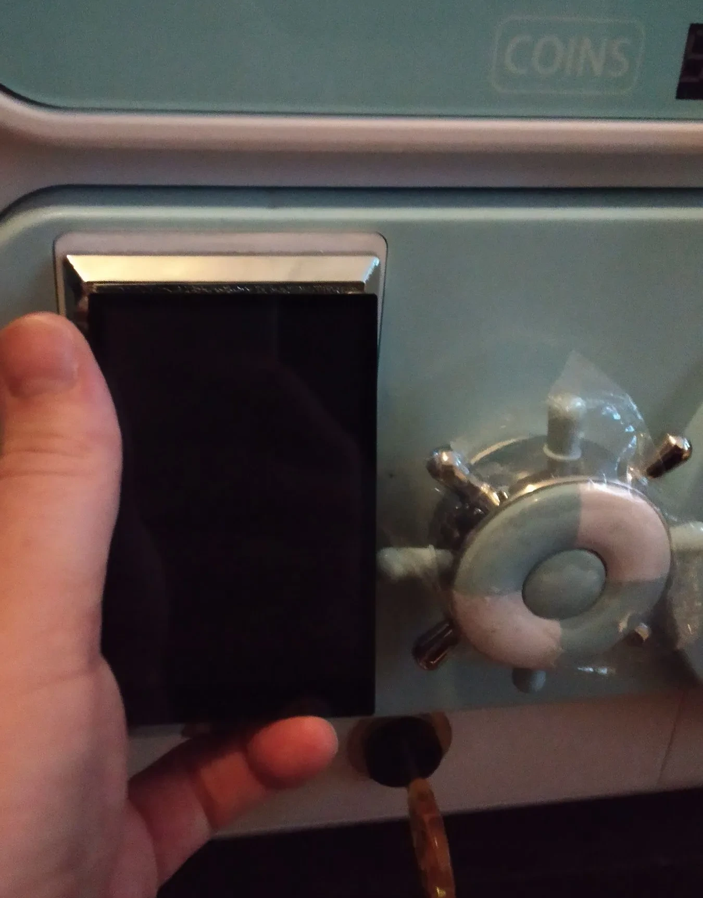
By merging the NFC Social Badge with a hardware-based Gachapon interface, we transform complex smart-contract interactions into a tangible experience. The machine acts as a Physicalized Based Rollup Node. A user "beeps" their badge, the machine verifies their TinyMeritRank and may engage with theSIWE-OIDC
Bridge. As a result, the machine may dispense physical assets, commodity tokens,
hardware parts, or "Rare" industrial NFTs, instantly.
The Sovereignty Manifesto is the ideological core of the Unified Sovereign Stack. It is a "joke" for those who realize that the current "Decentralized Finance" (DeFi) space is largely a faster, (hopefully) more transparent version of the legacy banking backend, still controlled by a "Syndicate" of centralized actors. This manifesto is the roadmap for a strategic exit from those captured rails into a truly autonomous, multi-polar industrial system.
The Great Unbundling: Rejecting the Unified Backend, The "Syndicate" (eez) operates on a "One Chain, One Policy" model, where regulatory capture at the sequencing layer eventually dictates who can participate. We reject this.
The Multi-Rail Mandate: We treat any centralized payment rail, be it a CBDC, a "domesticated" L2, or even a legacy interbank system, as a mere Commodity Layer. You should be able to "swap in and out" of these rails as easily as choosing a shipping provider.
Sovereignty as a Choice: If a rail becomes too "clean" (censored), the Sovereign Stack shifts its weight to the Sahara Node (L1) or a Commodity Based Rollup (L2) in a friendlier jurisdiction. We don't fight the bank, we make the bank irrelevant to our internal industrial logic. The Tools of Autonomy true sovereignty requires a specific kit of parts that cannot be "turned off" by a centralized provider:
The Sahara Node (The Rock): A PoW settlement layer that syncs at 64 kbit/s.
It is the only "Proof of Work" anchor resistant to the accumulation effects
that plague Proof-of-Stake. It is the final arbitrator of truth when the
high-speed backbones fail or become compromised.
Based Nano-Rollups (The Mesh): Recursive scaling that allows local factories (like the "Tinyblock" model) to settle their own state. Your industrial output (clamping force, color accuracy) is verified locally and settled globally via efficiency.
The Actuator Oracle (The Enforcer): Moving from "Watching" to "Doing". If
a DSLA is violated, the code has the physical power to cut power, lock
valves, or pause machinery. This is the "Code is Law" principle applied to
physics. Resonant Meritocracy vs. Plutocracy: We replace the "One Token, One
Vote" plutocracy with TinyMeritRank.
The Syndicate Check: Influence in the stack is earned through Personalized PageRank (PPR). It flows from "Seed Humans" who have proven their commitment to advancement. You cannot "buy" your way to the top of the MeritRank, you must "vibe" your way there through consistent, high-quality industrial maintenance.
Soulbound Identity: Your reputation is tethered to your NFC Social Badge.
It is not an asset to be traded on a DEX, it is a permanent record of your
contribution to the sovereign entity.
The "Boring Reality" as a Revolutionary Act! We embrace Federated Web 2.5.
(NextCloud, Gitea, Matrix, Mastodon etc.) because waiting for a
"perfect" Web3 is a trap.
Pragmatic Sovereignty: By gating legacy tools with SIWE-OIDC, we build a
sovereign "Corporate Headquarters" today.
Watch SWIE SSO OIDC Demo videon on x(formally twitter)
The Maintenance Shift: We don't work for "Clout" or "Yield". We work to
maintain the protocol because we are stakeholders. If the code is buggy,
our BASEFEE redirects drop. If the Heartbeat Oracles stay green, the
sovereign entity prospers.
The "Sound Money" narrative, anchored in absolute scarcity and deflationary pressure, has long been the holy grail of early cypherpunk economics. However, within the context of the Unified Sovereign Stack, we identify a critical failure in this model: Scarcity-induced Stagnation. When an industrial actor views their currency primarily as a "Store of Value" to be hoarded, they naturally withdraw it from the productive economy. This leads to a decline in capital investment, or what we call "Industrial Slop". Which inherently leads to a "Corporate Slop" environment.
In a deflationary "Sound Money" regime, the rational actor is incentivized to wait. Why invest in a new NPU-driven robot arm or a recycling sensor today if the currency used to buy it will be worth 10% more next year?
The Opportunity Cost of HODLing: This hoarding behavior causes the Velocity of Money () to collapse.
The Result: Economic friction increases, innovation cycles slow down, and the Industrial Output (),representing the real-world advancement of the stack,stagnates. The currency becomes a museum piece rather than an industrial lubricant.
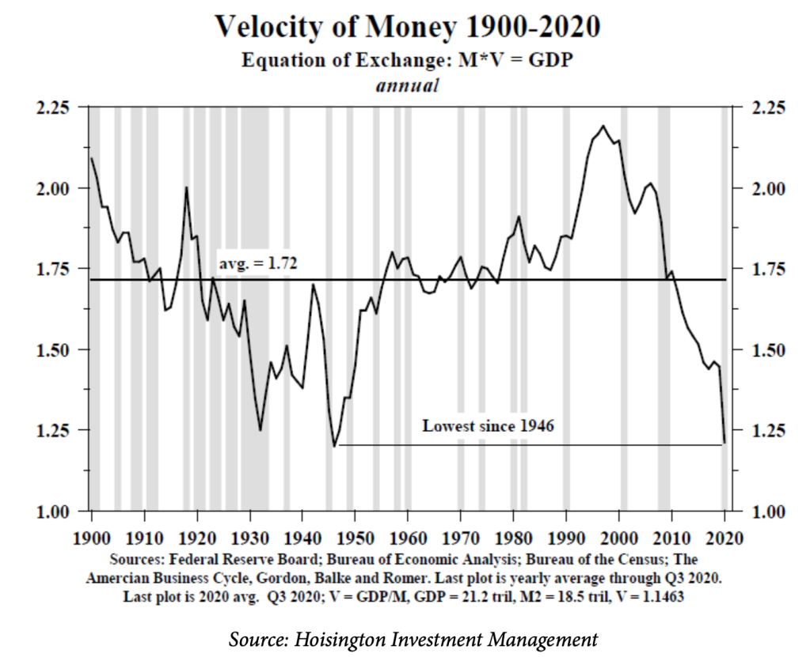
The Sovereign Stack reinterprets the classical Equation of Exchange, , as a dynamic control system rather than a static identity. In traditional monetary theory, Velocity () is often treated as a residual or a behavioral constant. We propose that is the primary exogenous variable, the "heartbeat" of the network, that dictates the ceiling of Industrial Output ().
The initial "Sovereign Thesis" posits that maximizing yields a corresponding maximization of . However, a rigorous mapping of velocity to real-world output requires accounting for marginal utility and systemic friction. Drawing from Solow (1956) and the Cobb–Douglas Production Function, we define the relationship between circulation and coordination as one of diminishing marginal returns. Initial increases in facilitate the division of labor and reduce Coasean transaction costs. However, as the network nears full utilization, each marginal unit of velocity produces less incremental :
Here, represents Productive Elasticity, the efficiency with which a "handshake" (transaction) translates into a "brick" (work unit).
To bridge the gap between growth theory and financial reality, we integrate the Financial Instability Hypothesis (Minsky, 1992). As the network nears full utilization, "Overheating" manifests as speculative churn, high driven by recursive arbitrage and automated trading loops that do not map to "bricks manufactured" or "code merged". To model this transition from productive coordination to entropic churn, we introduce a saturation decay constant , resulting in the Sovereign Output Function:
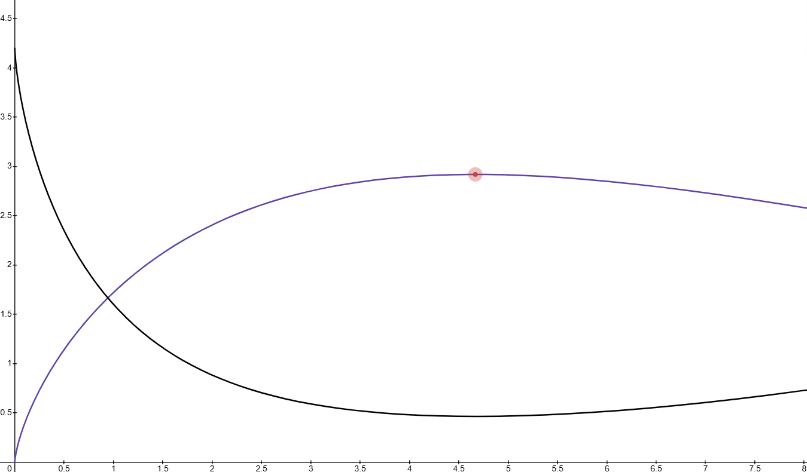
This mathematical formulation (visualized in Figure 5.2) bifurcates the economic state into three distinct phenomenological regions based on the interaction of (productivity) and (instability):
The interaction between systemic throughput and monetary stability is visualized in the model. Industrial Output () is represented in purple, while the Inflation Rate () is represented in black. We model the Inflation Rate as a function of the gap between Money Supply () and adjusted Output ():
The model reveals a critical Stagnation Trap at low velocity. Inflation spikes because there are too few goods produced to justify the money supply. Conversely, in the Overheated Regime, as productive output (purple) decays due to chaos, inflation (black) spikes non-linearly. The "Switzerland" situation occurs at the base of the black curve, where is minimized because is maximized.
To ensure the "Sovereign Engine" remains within the Optimal Regime, the protocol monitors and as real-time telemetry:
To refine interventions, we decompose total velocity:
Where represents productive transactions (wages, procurement) and represents speculative flows. If , the system detects an "Elasticity Drop" (). This triggers the Velocity Target Band policy: the protocol increases friction specifically targeting high-frequency recursive loops to drive the system back toward the productive frontier.
Moving beyond the mathematical, serves as a sociological status signal. Within the Resonant Meritocracy, the hoarding of currency, represented by at the individual level, is viewed as a withdrawal of trust from the system.
By rewarding "Velotile" behavior through the TinyMeritRank system, we align individual incentives with the macroeconomic health of the stack. A high personal score signifies an actor who is actively facilitating industrial throughput, thereby increasing their social capital. In this framework, the currency is no longer a store of value to be locked away, but a Dynamic Signal of Productivity that must flow to maintain its relevance.
Industrial "Slop" occurs when capital is misallocated because the currency is too "expensive" to move. By reclaiming the rails from the banking backend, we enable:
Instant Settlement: No more 3-day interbank wait times, the Based Rollup settles at the speed of the AI backbone.
Micropayment Fluidity: Paying a sensor for a "Heartbeat" becomes feasible, allowing for granular control of industrial processes.
Physical P2P Cash: Using NFC Tiny Discs (Banknotes) to maintain physical
velocity in the "Boring Reality" of daily life.
To mitigate the risks of early-stage "State Capture" and "Entropy Leakage", we propose the Dynamic Seed-Set Rotation (DSSR) protocol. This mechanism governs the transition of the TinyMeritRank trust-roots from a curated, high-integrity "Genesis Circle" to a fully stochastic, decentralized selection process.
The DSSR operates on a periodic epoch basis. During each epoch, the system designates a subset of nodes as "Root Seeds" for the Personalized PageRank (PPR) calculation. This creates a Proximity Dynamic: network participants are incentivized to optimize their "Vibe Weight" and industrial output (Q) to maintain topological closeness to the current seed-set. Because the seed-set is dynamic, actors cannot settle into a static rent-seeking position, they must continuously demonstrate utility to remain within the "Resonant Radius" of the shifting roots.
Rather than immediate random selection from the entire network, which is vulnerable to sophisticated Sybil attacks in low-liquidity environments, the seed-set is drawn from a Candidate Ledger.
The transition from a small, DAO-curated pool to a large-scale algorithmic rotation is governed by the Network Diffusion Coefficient (). Once the network reaches a critical threshold of token distribution (measured by the Gini coefficient of Merit-weight) and geographic node dispersion, the DSSR automatically expands the Candidate Ledger to include all nodes above the 90th percentile of Reputation Score.
By cycling seeds, the stack introduces "Moving Target Defense" (MTD) logic into the social layer of the protocol. Even if an adversary captures a segment of the "Genesis Circle", the scheduled rotation of roots ensures that the network’s "Source of Truth" remains a moving target, effectively neutralizing long-range Sybil influence.
To prevent "Syndicate" capture or "Social Slag" errors from permanently excluding valid contributors. The EASC ensures that any rejection from the "Seed Set" or the "Candidate Ledger" is based on falsifiable on-chain data rather than subjective bias.
A rejection is not a silent failure but a signed attestation of non-compliance.
To handle disputes, the protocol follows a three-stage escalation process:
Tier 1 Algorithmic Re-Audit (The Prover Appeal): The rejected party can trigger a "Re-Audit" by staking a small amount of Velotile Assets. A randomly selected 7-member committee of Soulbound AI Agents re-evaluates the submitted telemetry using a different PPR (Personalized PageRank) seed-set to check for topological bias.
Tier 2 The Sovereign Jury (Social Verification): If the automated audit is contested, the case moves to a human jury.
Tier 3 The DAO Veto (The Supreme Court): For high-stakes rejections (e.g. permanent blacklisting of a regional node), the case escalates to a Miner DAO Veto Vote.
If the appeal is successful:
The protocol’s issuance function is not a linear constant but a derivative of the Industrial Output () and Velocity (). To prevent the "Recursive Leverage" traps seen in current DeFi (like the Aave/rsETH restaking contagion), the Sovereign Stack employs a hard "Circuit Breaker" to decouple token supply from speculative churn.
Issuance enters a Halt State when the Efficiency Ratio () drops below a critical floor ().
If drops below a survival threshold (e.g. massive industrial shutdown or network attack), the protocol enters Contraction Mode:
Unlike legacy DeFi protocols that require manual "Emergency Pauser" multisigs (which failed to stop the 2026 Kelp DAO drain in time), the Sovereign Stack's halt is Programmatic and Evidence-Based:
In the Sovereign Stack, we treat cross-border capital flow as a problem of network topology rather than permissioned bureaucracy. Traditional Forex (FX) relies on the correspondent banking system connected by SWIFT messages. This creates the "SWIFT Tax": a compound of intermediary bank fees, delayed settlement (), and opaque markups. We replace this with Velotile Assets and Value-Packet Routing (VPR) on Based Rollups.
A Velotile Asset is a hybrid monetary instrument optimized for (Velocity) rather than long-term (Money Supply).
Instead of a correspondent bank chain, we utilize a Double-Decker Stablecoin Sandwich settled on the Elysium Backbone.
To eliminate the "risk premium" associated with traditional FX, we enforce strict protocol-level performance:
By moving FX routing to the Sovereign Stack, we create a Multi-Polar Rail indifferent to the "Syndicate's" banking policy.
Traditional blockchain economics is obsessed with the "Sound Money" trope of absolute scarcity (). However, in a multi-speed industrial stack, fixed supply leads to the "Security-to-Value Gap". If the productivity () of the L2/L3 industrial layers outpaces the market cap of the L1, the network becomes a "honey pot" for 51% attacks. We solve this by applying Modern Monetary Theory (MMT) and Elastic Supply mechanics to the protocol layer. We treat the protocol as a sovereign issuer that prioritizes Full Employment of Security (Miners) and Full Employment of Maintenance (Contributors) over artificial scarcity.
Unlike Bitcoin, which forces miners to rely on volatile transaction fees (the "Fee-Only Trap"), the Sovereign Stack provides a Security Salary.
The Mechanism: The L1 elastically increases the money supply () based on industrial throughput signals ().
Functional Finance: In MMT, a sovereign entity cannot go "bankrupt" in its own currency. Similarly, the protocol prints enough tokens to ensure the hash rate remains at a "National Security" level of hardness. This subsidy is not "inflation" in the traditional sense, it is an investment in the Defensive Moat of the industrial world.
Energy Arbitrage: Miners transition from "Speculators" to "Energy Utility Providers" with a stable, predictable income, ensuring the Sahara Node remains a rock-solid settlement layer even during market downturns.
Maintenance is the "Boring Reality" that prevents "Industrial Slop". We fund the Federated Web 2.5 and core client development through a Maintenance Fee redirect.
The BASEFEE Redirect: A portion of every transaction's BASEFEE on the
Based Rollup is redirected to a Federated DAO Safe.
Elastic Support: If the Heartbeat Oracles or DSLA metrics indicate that
the protocol is under-maintained (e.g. rising latency, unpatched bugs), the
Miner DAO can signal an elastic issuance boost specifically for the
"Maintenance Treasury".
Alignment: This ensures that Tier 2 Stakeholders are paid a professional
wage to keep the "Industrial Glue" (OIDC bridges, Logtrees, etc.)
functional.
[Image: A "Circular Economy" diagram showing L1 Issuance flowing to Miners,
and Transaction Fees/BASEFEE redirects flowing to Maintenance Contributors,
both feeding back into Network Security and Productivity]
We utilize issuance to fight the Syndicate's Accumulation Effect.
The Matthew Effect (The Syndicate): "To him who has, more will be given". Traditional PoS systems reward those who already hold the most tokens.
The Mark Effect (The Sovereigns): We reward those who do. By prioritizing issuance toward Miners (Physical Security) and Maintainers (Technical Advance), we ensure that new tokens flow to the active participants rather than the static hoarders.
MMT teaches that taxes do not fund spending, but instead control inflation by removing money from circulation.
The Protocol Tax: Fees burned on-chain and "Slashing" penalties for DSLA
violations act as the "Recycling Drain".
The Balance: When (Velocity) is high and (Productivity) is growing, the protocol expands . If the economy "overheats" or productivity drops, the protocol increases the "Burn Rate" to maintain price stability ().
PoW Rock" (ETC) as the Immutable Physical AnchorThe foundation of the recursive stack is the Sahara Node, an extreme optimization of the Ethereum Classic (ETC) client. While the "Syndicate" (eez) pushes for data-heavy Proof-of-Stake (PoS) consensus that requires data-center-grade fiber, the Sahara Node is engineered for the "Boring Reality" of global industrial constraints: the 64 kbit/s bandwidth limit.
PoW Rock"The Sahara Node utilizes the Spiral/Olympia upgrade framework to strip the L1 node to its bare essentials. It operates as the "immutability anchor" for the entire stack.
Bandwidth Constraint (64 kbit/s): By implementing aggressive header-first synchronization and state-pruning, the node can maintain consensus over a standard voice-grade telephonic circuit. This ensures that even a solar-powered node in the Sahara Desert or a rural manufacturing hub in the Global South can act as a first-class citizen of the network.
The Physicality of Work: We leverage ETChash (Thanos/Magneto) to maintain a physical tie to hardware. Unlike PoS, where "truth" is dictated by the largest capital holders (the Syndicate), the Sahara Node’s truth is anchored in the physical expenditure of energy,the only neutral arbiter in a multi-polar world.
In the Tinyblock industrial model, a factory must know that a contract
governing a 20-year machinery lease or a DSLA for energy supply will not
change due to a "social fork" or governance whim.
The Nolympia Precedent: We address the concerns of the "Nolympia" movement by keeping the L1 "clean". There are no complex DAO treasuries or experimentation layers on the Sahara Node. It is a "Boring Rock",an immutable settlement layer where , and the rules of the EVM are fixed.
Security for the Mesh: The Sahara Node provides the "root of trust" for millions of Based Nano-Rollups. Even if a regional L2 backbone (like Elysium) faces a temporary blackout, the Sahara Node remains the "Air-Gap" that preserves the final state of the global industrial ledger.
The 64 kbit/s requirement is not just a technical spec, it is a Sociopolitical Filter.
Anti-Syndicate Design: If a blockchain requires 1 Gbit/s to sync, it naturally migrates to AWS/Google Cloud. By forcing the protocol to sync over 64 kbit/s, we make it impossible for the "eez" to centralize the L1.
Targeting the DA Challenge: Note that 64 kbit/s is an ideal goal for this architecture. With heavy compression, Zero-Knowledge (ZK) proofs, and a robust Data Availability (DA) layer sitting off-chain, achieving massive L2 throughput while anchored to a low-bandwidth L1 is the grand challenge. If we can even reduce the L1 node bandwidth requirements down to 1 Mbit/s, that would be an amazing victory for decentralization.
The People’s Anchor: This bandwidth limit ensures the network is owned by the "Innovative Fish",the small-scale miners and regional operators,rather than the "Sharks" of the banking backend.
[Image: A diagram of a Sahara Node micro-device connected via a low-bandwidth satellite link, anchoring a complex recursive mesh of L2 and L3 rollups to the ETC blockchain.]
If the Sahara Node is the "Immutable Rock", Elysium is the high-velocity "Nervous System". Elysium is a Based Rollup, meaning it delegates its sequencing entirely to the L1 Miners, but it operates at the speed of modern fiber-optic backbones (600 Gbit/s). It is designed to handle the heavy lifting of industrial coordination, AI-telemetry, and high-frequency settlement while remaining quantum-secure.
By using a Based Rollup architecture (Ref: Taiko & Surge), Elysium eliminates the need for a separate, centralized sequencer.
L1 Alignment: Transactions on Elysium are sequenced by the same miners running the Sahara Node. This removes the "Syndicate" middleman and ensures that L2 fees flow directly into the Security Salary of the L1.
Liveness: As long as the Sahara Node is alive, Elysium is alive. There is no risk of a "sequencer outage" that has plagued other L2 solutions.
Dilithium)The "Boring Reality" is that the cryptographic standards of today (ECDSA) will not withstand the quantum computers of tomorrow. For an industrial stack intended to govern 50-year infrastructure cycles, "wait and see" is not an option.
ML-DSA (Dilithium)
Integration: Elysium implements NIST-standard Module-Lattice-Based Digital
Signature Algorithm (ML-DSA). This provides post-quantum security for the
long-term integrity of the ledger.
Hybrid Verification: For backward compatibility and efficiency, Elysium
supports a hybrid model: standard ECDSA for daily "low-value" work, and
ML-DSA for "Tier 3" board decisions, large treasury movements, and
industrial baseline updates.
Taiko with Elysium optimizations can be optimized for the 600 Gbit/s optical interconnects that define modern AI data centers. Or corporate entities stick with their Surge & Nethermind setup.
Throughput for the Mesh: This high-bandwidth pipe is required to aggregate the millions of Heartbeat Oracles flowing from the L3 Nano-Rollups.
Data Availability (DA): While the L1 is slow (64 kbit/s), Elysium utilizes high-speed DA layers to ensure that industrial logs and telemetry are available for Private AI Oracles to verify.
L1/L2 Symmetry: Despite the speed difference, the state roots of Elysium are "flushed" to the Sahara Node, ensuring that the high-speed nervous system is always anchored to the immutable rock.
Clearinghouses for Velotile Assets and Forex Routing. From block builder, to routing and liquidity provider. From Corporate Slophouse to IoT hub infrastructure provider.
The Core-Geth PR by GravityLabs
Bringing Dilithium/Elysium specs to the core client, we bridge the gap
between "experimental" and "industrial".
Institutional Trust: Corporate entities (The "Sovereign Board Members") can trust Elysium because it combines the highest technical speed with the most conservative quantum protection.
While the Elysium backbone handles global high-speed coordination, the Commodity Based Rollup is the "Local Economy Engine". Designed specifically for the Global South (South Africa, Africa, Middle East, SE Asia), these rollups prioritize the Physical Reality of resources over abstract financial speculation. They serve as the bridge between regional physical assets, minerals, energy, agricultural output,and the global Unified Sovereign Stack.
A Commodity Based Rollup (CBR) is a regional L2 or L3 that settles to the Sahara Node (L1) but operates with local industrial parameters.
Regional Sovereignty: Unlike "The Syndicate" which imposes a one-size-fits-all monetary policy, a CBR in Africa can tune its fee structures and liquidity pairs to match local harvest or mining cycles.
Based Sequencing: By delegating sequencing to the L1 Miners, regional CBRs avoid the cost and centralization risks of running a local sequencer. This allows a regional bank or a cooperative of mines to launch a rollup with minimal technical overhead.
In these regions, "Sound Money" is often synonymous with "Foreign Capital". CBRs break this dependency by turning physical commodities into high-velocity liquidity.
Tokenizing the Ground: Copper, cobalt, or grain are registered via Heartbeat Oracles (telemetry from mining equipment/silos).
Local Settlement: Instead of waiting for a USD-denominated bank wire from the West, local entities trade instantly on the CBR.
The "Commodity Peg": These rollups often use local "Velotile" assets pegged to the basket of resources they produce, ensuring that local purchasing power is protected from global FX volatility.
CBRs are designed for the "Boring Infrastructure" available in developing markets.
Vectoring over Copper: Utilizing old telephone lines with VDSL2 Vectoring, these rollups can maintain 100 Mbit/s to 1 Gbit/s symmetrical speeds. This allows a rural bank node to act as a regional clearinghouse for the Sovereign Stack.
Mesh Integration: They act as the "Parent" to millions of L3 Based Nano-Rollups (Logtrees) running on agricultural sensors or solar-grid actuators, aggregating local data before flushing it to the Sahara Node.
By using CBRs, regional powers enter a new Nash Equilibrium:
The Choice: They can either continue paying the SWIFT Tax and remain subject
to Syndicate sanctions, or they can route their internal trade through a CBR.
The Result: The protocol-level neutrality of the Sahara Node ensures that no "Global North" entity can freeze the assets of a "Global South" Commodity Rollup. Trust is shifted from geopolitical alliances to the Actuator Oracles that verify the physical movement of the goods.
In the "Boring Reality" of industrial scaling, the bottleneck is not just transaction throughput, but state bloat. If every sensor on a factory floor or every smart garbage container in a city had to update the global L2 state individually, the system would collapse under the weight of its own metadata. Based Nano-Rollups (L3/L4) solve this by implementing the /Logtree efficiency model.
The core technical hurdle for an industrial mesh is the ability to prove the state of a massive number of devices () without a linear increase in proof size.
The Principle: Utilizing the research found in the and treemaps paper , we implement state treemaps where the complexity of verifying a state transition scales logarithmically rather than linearly.
Logtrees: These are recursive data structures optimized for "Small Data" (heartbeats, sensor logs, actuator signals). Millions of individual L4 "Nano-events" are summarized into a single Logtree root. This root is "flushed" to the L2 Elysium or Commodity Rollup, which in turn flushes its root to the L1 Sahara Node.
Nano-Rollups are designed to run on Federated Hardware, small, low-power NPUs and microcontrollers (e.g. RISC-V with TEEs).
L4 (The Device Layer): A smart garbage container uses a camera and local AI to
identify a "Rare Bottle NFT". It records this on its local L4 Nano-Rollup.
L3 (The Gateway/Regional Mesh): Local clusters of devices (a factory floor, a city block) aggregate their L4 logs into an L3 Based Nano-Rollup.
The "Based" Nature: These rollups do not have their own consensus, they "borrow" the security of the parent L2. This allows devices to be extremely lightweight, as they only need to compute proofs, not participate in voting or mining.
By using Logtrees, the stack can handle the Million-Node Actuator Mesh.
Scenario: A city-wide energy grid requires a synchronized cutoff for maintenance.
The Problem: Sending 1,000,000 individual "Cutoff" transactions would clog any traditional L2.
The Solution: The DAO issues a single signed "Root Command". Because the actuators are part of a Based Nano-Rollup, they can verify their inclusion in that command via a logarithmic proof. The physical action is synchronized, atomic, and cryptographically sound.
This architecture enables the transition from "Dumb Data" to Sovereign Industrial Signals.
Tiny Proofs: A sensor can prove it stayed within a temperature range for 24 hours using only a few hundred bytes of Logtree data.
Ultra-Low Latency: Local L3 meshes allow for sub-millisecond physical responses (e.g. safety stops on a robotic arm) while maintaining the long-term settlement on the L1 Rock.
Cost Efficiency: By compressing millions of updates into a single L2 transaction, the "gas cost" per sensor update becomes a fraction of a cent, enabling the High-Velocity economy.
In the "Boring Reality" of industrial production, data is often manipulated to meet quotas or secure funding. The Heartbeat Oracle is our solution to the "Garbage In, Garbage Out" problem. It moves the source of truth from a software database to the physical silicon itself, creating an immutable link between the machine's physical state and the on-chain ledger.
A Heartbeat Oracle is a specialized firmware module running within a Trusted
Execution Environment (TEE) or a Secure Element (SE) on the industrial device
(AI NPU Gateway, PLC, or IoT gateway).
Cryptographic Tethers: The device generates a private key within the Secure Element that never leaves the silicon. Every "Heartbeat" (a packet of telemetry data) is signed by this key.
Proof of Productivity (): Unlike a simple ping, the Heartbeat includes high-fidelity metadata: motor torque, RPM, temperature, or computer vision the Fisher Equation:
The Heartbeat doesn't just broadcast data, it provides an Attestation Report.
Sensing: The machine completes a unit of work (e.g. molding a Tinyblock brick).
Verification: The local NPU verifies the "clamping force" and "color
accuracy" metrics.
Signing: The Secure Element signs these metrics along with a timestamp and a unique block-header from the parent Based Nano-Rollup (L3).
Flushing: This signed "Heartbeat" is bundled into a Logtree, allowing millions of heartbeats to be verified on the L2 Elysium backbone for a fraction of a cent.
Heartbeat Oracles act as the primary defense against "Industrial Slop" (fake productivity).
For the Maintenance Contributor: Their payout from the BASEFEE Redirect is
contingent on the "Green Status" of the fleet they manage. If the Heartbeats
stop or show declining hardware health, the DSLA contract automatically
throttles the payout.
For the Investor: Sovereign actors can purchase Vibe-Collateralized Bonds with confidence, knowing the underlying assets are literally "beating" in real-time. You aren't trusting a quarterly report, you are trusting the physics of the Secure Element.
NFC BadgesThe Heartbeat Oracle also interacts with the NFC Social Badge.
The "Maintenance Handshake": When a Tier 2 Maintainer repairs a machine, they
"beep" their badge against the machine’s NFC reader.
The Signature: The machine’s Heartbeat Oracle includes the maintainer's sovereign ID in its next signed report. This provides a physical proof-of-presence, ensuring that "Maintenance" is a real-world act of service, not just a digital entry.
If the Heartbeat Oracle is the "Sense", the Physical Action Oracle (Actuator) is the "Will". In the Unified Sovereign Stack, "Code is Law" ceases to be a digital suggestion and becomes a physical reality. We bridge the gap between smart contract state and mechanical motion, allowing the DAO to enforce its policies directly on the factory floor or the energy grid without a human bailiff.
An Actuator Oracle is a hardware-hardened controller, typically a RISC-V or ARM microcontroller with a Trusted Execution Environment (TEE), that listens to specific events on a Based Nano-Rollup (L3) or the Elysium Backbone (L2).
The Signature Check: The actuator does not move unless it receives a message
signed by the DAO’s Threshold Signature (SAFE) or a DSLA contract.
Tamper-Resistance: If the physical line between the NPU and the actuator
(e.g. a power relay or a gas valve) is cut or bypassed, the device’s internal
Heartbeat Oracle immediately signals a "Breach of Integrity" to the L1 Sahara
Node, triggering a network-wide slashing of the local operator’s collateral.
The primary use case for Action Oracles is the enforcement of Decentralized
Service Level Agreements (DSLA).
The Energy Kill-Switch: If a regional "Commodity Rollup" node in Africa or a
factory in the Middle East fails to maintain its "Security Stake" or violates
environmental heartbeats, the DSLA contract emits a "Cutoff" command. The
Actuator Oracle, hard-wired into the local power main, physically severs the
connection.
Fluid Logic: In chemical or toy manufacturing (Tinyblock), valves controlling raw material flow are gated by the chain. If the Private AI Oracle detects "Slop" in the telemetry logs (e.g. substandard plastic density), the valve is physically locked until a Tier 2 Maintainer "Beeps" in to resolve the issue.
While "Code is Law" is the guiding principle of the stack, human safety and asset protection require a Physical Supremacy protocol. Software logic can contain bugs, hardware interlocks must be immutable.
The bridge between digital intent and physical action carries immense liability. We manage this through the DSLA-Safety Link.
Traditional legal systems rely on Post-Facto enforcement (lawsuits after the fact). The Actuator Oracle provides Pre-Emptive Enforcement.
In the Unified Sovereign Stack, waste is not an externality, it is a misplaced resource. We move beyond the "Dumb Bin" model to AI-Enhanced Infrastructure. By integrating Local AI and Computer Vision directly into the collection points, we turn waste management into a high-fidelity filtering process that feeds the local Commodity Based Rollup.
The Smart Container is equipped with a low-power NPU (Neural Processing Unit)
and a high-speed camera module. It runs local inference (e.g. a quantized
MobileNet or YOLO model) to analyze deposits in real-time.
Resource Filtering: Instead of a single "trash" stream, the AI identifies materials (PET, Aluminum, Glass, Paper) with 99.9% accuracy.
Quality Assessment: The AI doesn't just see a bottle, it checks for contamination. If a container is contaminated with organic waste, the "Heartbeat" of that container notifies the Miner DAO to reroute the collection logistics.
The Filter-at-Source: By filtering at the point of entry, we eliminate the energy-intensive centralized sorting facilities of the "Syndicate" model.
When a bottle is inserted, the vision system performs a "Structural Integrity and Material Analysis".
Visual Proof-of-Return: The AI generates a visual hash of the inserted item. The reward is only triggered once the internal weight and volume sensors confirm the item has entered the physical storage baffle.
The "Resource Twin" Minting: For every verified deposit, the container’s L4 Nano-Rollup triggers the minting of a "Resource Credit NFT". This NFT is cryptographically tied to the physical HDPE or Glass now held in the container's escrow.
Regional Specifics: In the EU (e.g. Germany), the AI distinguishes between Mehrweg (refillable) and Einweg (single-use). If a user fails to fully insert the bottle, the "Beep-to-Verify" fails, and no NFT is issued.
The Smart Container acts as a Physical Oracle. It tethers the physical mass of waste to the digital liquidity of the rollup.
Insertion: The user inserts a bottle, the camera identifies 500mg of Clear PET.
Actuation: The container opens the baffle, the bottle drops into the "Physical Escrow" (the bin).
Settlement: The container signs a state update to the Commodity Based Rollup, increasing the local "Plastic-Collateral" pool.
The Option: The user "Beeps" their NFC Badge. They can choose:
Tiny Disc with NFC wallet on it and storage.
The Recycling Game is not a substitute for returning bottles, it is the Incentive Layer to ensure that almost 100% of bottles are returned, especially those that "fall through the cracks" of the traditional system.
We utilize Based Nano-Rollups to transform the "Pfand" (deposit) into a tradeable asset. The bottle must be physically returned to the machine to initiate the game.
The Standard "Burn" NFT: Issued for every standard bottle. This NFT has a fixed "Physical Claim" of EURe. If the user doesn't want to play the game, they "Burn" the NFT at the machine for instant cash.
The "Rare" Collector Token: If the AI identifies a limited-run label or a "vintage" glass bottle (e.g. a 1990s Club Mate bottle), it mints a Rare NFT.
The Hook: These NFTs have the same EURe floor, but they carry Governance Weight in the local "Resource DAO" or are sought after by collectors.
The Result: People are incentivized to go into "hard-to-reach" places (parks, construction sites) to find bottles that might be "Rare", ensuring a cleaner physical environment.
This system is designed specifically for "Proof of Physical Effort".
Physical-First Labor: A "Vibe Scout" (collector) doesn't just click buttons, they perform the social labor of moving physical mass from the street to the machine.
The Tiny Disc Interface: The collector "Beeps" their NFC Tiny Disc (Banknote mode) at the smart container. The NFT, and its underlying cash value,is instantly transferred.
The Strategy: A collector might gather 100 standard bottles (worth 25 EURe) but find one "Rare" import bottle. They can trade that one Rare NFT to a high-tier stakeholder for 10 EURe, effectively earning a premium on their physical labor.
The "Game" ensures that the recycling plant receives a high-purity resource stream.
Strict Sorting: Because the AI only mints "Rare" rewards for clean, high-quality glass or plastic, users are trained to pre-sort and clean the bottles before insertion.
Physical Proof: The NFT acts as a Digital Passport. When a recycling plant buys a ton of "NFT-Verified PET", they are buying a guaranteed mass that is already physically sitting in the Smart Container’s bin.
The Final Burn: When the maintenance truck collects the bottles, the "Physical Escrow" is moved to the plant. The plant "burns" the batch of NFTs to unlock the digital EURe liquidity to pay the collectors and the maintenance crew. No bottle, no NFT, no payout.
The game utilizes a Dual NFC architecture to handle the payout:
The Banknote (Movable on NFC): For the collector, the value lives on the
disc. They can trade this disc at a local kiosk for physical goods or "Fixed
Cash" without ever needing to interact with a Smart Account.
The Badge (Smart Account Settle): For the kiosk owner or the professional maintainer, the disc is "cashed in" to their Sovereign Smart Account. This moves the value from the physical "Movable" layer to the on-chain "Fixed" layer for long-term holding or Forex Routing.
SIWE-OIDC Bridge: Gating Federated Web 2.5 via Hardware WalletsIn the "Sovereignty Stack", we reject the false choice between the "Corporate
Cloud" (Google/Microsoft) and the "Unusable Web3" (purely on-chain storage).
Instead, we build a Federated Web 2.5 infrastructure. We take industry-standard
open-source tools, NextCloud for file management, Gitea for code, and Matrix for
communication, and wrap them in a sovereign cryptographic shell using the
SIWE-OIDC Bridge.
The "Syndicate" controls the "Boring Reality" by owning your identity via Google/Okta SSO. Or own the Gates to web 3 like Fileverse. If they de-platform you, you lose your files, your code, and your team.
The Bridge Logic: We use Sign-In with Ethereum (SIWE) as the primary
authentication layer.
OIDC Integration: We implement a bridge that translates an Ethereum
signature into an OpenID Connect (OIDC) token. To the legacy software
(NextCloud/Gitea), you appear to be logging in via a standard enterprise
provider. To the user, you are logging in with your Sovereign Hardware Wallet.
We web3fy the federated web 2.5 stack by adding web3 marketsplaces to it. Or utilize ipfs for decentralized backups. Wherever it makes technological sense.
Access to the industrial "Sovereign Board" is no longer a matter of passwords stored in a central database.
Physical Gating: Your access to the "Maintenance Repository" on Gitea is tied
to your NFC Social Badge or Ledger/Trezor.
The Handshake: When you attempt to log in, the bridge prompts a signature. You
"beep" your NFC badge. The signature is verified against the TinyMeritRank
on the Based Rollup. If you have the required reputation or role, the OIDC
bridge issues a session.
The data isn't on AWS, it's on Federated Hardware (e.g. the "Tinyblock" servers) owned by the DAO members themselves.
NextCloud: Stores the high-resolution AI models for the Smart Containers and the CAD files for the Actuator Oracles.
Gitea: Hosts the source code for the Elysium Backbone and the Sahara Node.
Governance: Access permissions are pulled directly from the chain. If a
DSLA is violated or a member is slashed, the SIWE-OIDC bridge
automatically revokes their "Badge Access" to the internal servers.
By using Web 2.5, we achieve Pragmatic Sovereignty:
Zero Migration Cost: We use tools that already work and are familiar to professional engineers.
The Syndicate Check: Because the identity layer is SIWE, the DAO can move
its entire server cluster from one hosting provider to another (or to local
"Home Servers") in minutes without resetting a single user password. Identity
is portable because it is owned by the user's private key.
In the "Syndicate" model, status is bought (Plutocracy) or farmed by bots (Sybil attacks). In the Unified Sovereign Stack, we implement TinyMeritRank, a mathematical social graph that treats reputation as a fluid, non-transferable commodity. It ensures that the "Innovative Fish" hold more weight than the "Capital Sharks".
Instead of a global "score" that can be manipulated by central authorities, TinyMeritRank uses Personalized PageRank.
The Seed Set: The graph starts with a "Seed Set" of verified, long-term sovereign contributors (e.g. the original Miner DAO or Tier 2 Maintainers).
Trust Propagation: Influence flows through the network based on physical and digital interactions. When you "Beep-to-Verify" with a high-reputation peer at a regional hub, a portion of their "Merit" flows to you.
Sybil Resistance: Because PageRank penalizes "circular reporting" (bots vouching for bots), it is mathematically expensive to fake status. To gain high MeritRank, you must be recognized by nodes that are themselves "deep" in the trust graph.
To bridge the gap between human intuition and on-chain data, every sovereign identity is paired with a Soulbound AI Agent.
The Agentic Layer: This is a local, private LLM/Agent running in your Secure Element. It monitors your contributions: the code you merged on Gitea, the "Heartbeats" of the machines you maintained, and the "Rare NFTs" you collected.
Vibe-Attestation: The agent generates an "Attestation of Merit" signed by your hardware. This isn't just a number, it’s a cryptographically secured summary of your actual work.
Non-Transferability: Because the agent is "Soulbound" to your hardware-backed
SIWE identity, you cannot sell your reputation on a DEX. If you lose your
NFC Social Badge, you must re-verify through your trusted peers to restore
your agentic state.
TinyMeritRank serves as the dynamic layer for your "Physical and Digital Permissions", but to prevent instability, it is combined with structural checks within the stack:
Tier 3 (The Board): Requires a top 0.1% MeritRank, reinforced by a Time-Locked Multisig or long-term structural appointment. Only they can propose global Elastic Supply changes or major protocol forks.
Tier 2 (Maintainers): Requires a top 5% MeritRank alongside a "Stable Determination" mechanism (e.g. a formal bonded stake, DAO ratification, or decentralized peer-appointment) to ensure the role isn't completely volatile from daily rank shifts. Grants write-access to the Federated Gitea and the ability to trigger "Actuator Oracles".
Tier 1 (Sovereigns): Open to anyone with a "Beep-verified" identity. Allows participation in the Recycling Game and the use of Crypto-Native Cash.
Access control is useless if the underlying code is compromised through laziness or supply-chain attacks.
Individual Commit Sovereignty: Every individual commit pushed to the Federated
Gitea must be cryptographically signed with the developer's SIWE key. This
links every line of code definitively to an immutable on-chain profile, making
hit-and-run code injections impossible without burning the developer's
identity and MeritRank.
Threshold Signature Releases: No single maintainer can push a major release or compile the final binaries. All critical software releases and core updates require a threshold signature (e.g. 5-of-9 multisig) from authorized Tier 3 / Tier 2 maintainers.
The "No Blind-Upgrade" Mandate: To ensure the network is never overtaken simply because operators were too lazy and auto-upgraded without checking, the Sahara Node and Elysium clients explicitly disable "auto-upgrading" mechanisms. Major protocol version transitions require explicit, manual verification and structurally signed operator consent, neutralizing the primary vector for automated supply-chain capture.
The Syndicate can buy 51% of a token supply or align them through other means, but they cannot buy 51% of TinyMeritRank.
The Time-Tax: Merit is earned over time through consistent physical presence and industrial output ().
The Decay Function: Merit "decays" if a node becomes inactive. This prevents "Legacy Capture", where early participants hoard power without continuing to maintain the stack.
The Payoff: High MeritRank reduces your transaction fees on Commodity Based Rollups and increases your share of the Security Salary, aligning your personal prosperity with the health of the mesh.
NFC Badges, Smartphones, and Passwords for Tiered AccessIn the Unified Sovereign Stack, security is not a binary state but a gradient. We reject the fragile "Single-Seed Phrase" model of early crypto, which leads to total loss from a single mistake. Instead, we implement 3-Factor Sovereign Auth (3FSA), mapping cryptographic security to the physical habits of the "Boring Reality".
Access to the stack is governed by the intersection of three distinct entropy sources:
Something You Have (The NFC Social Badge): A low-cost, rugged NFC Tiny
Disc or "Social Badge". This contains a hardware-bound key used for
low-stakes interactions (Recycling Game, P2P Cash, Door Access).
Something You Are/Own (The Smartphone): The smartphone acts as a Smart Account Signer (using Passkeys/FaceID). It manages the "Active Session" and provides the UI for complex interactions like Forex Routing.
Something You Know (The Sovereign Password): A high-entropy passphrase used to unlock the Secure Element of your hardware wallet or to authorize "Tier 3" Board-level transactions.
We apply Risk-Adjusted Authentication. Your level of effort to authenticate should match the stakes of the action.
| Access Tier | Security Level | Required Factors | Use Case |
|---|---|---|---|
| Tier 1: High Velocity | Low | NFC Badge |
Collecting "Rare" Bottle NFTs, paying for coffee, "Beep-to-Verify" presence. |
| Tier 2: Maintenance | Medium | NFC + Smartphone |
Merging code to Gitea, accessing NextCloud, authorized machine repairs. |
| Tier 3: Sovereign Board | High | NFC + Smartphone + Password |
Moving Large Treasury Funds, changing Elastic Supply, triggering "Actuator Kill-switches". |
By leveraging NFC-to-Mobile bridging, we create a seamless UX for the industrial floor.
The Handshake: When a Maintainer needs to authorize a firmware update on a
robot arm, they open the app on their phone (FaceID) and then physically "tap"
their NFC Social Badge against the phone.
The Multi-Sig Logic: The Smart Account (ERC-4337) sees two signatures: one
from the phone's Secure Enclave and one from the NFC disc. This ensures that
even if a phone is stolen, the attacker cannot act without the physical badge.
What happens if you lose your 3FSA devices? We solve the "Forever Locked" problem through Sovereign Social Recovery.
Guardian Mesh: Your "Guardians" are not just random people, but peers with high TinyMeritRank who have physically "Beeped" with you in the last 30 days.
Hardware-Assisted Recovery: To reset your account, you must gather 3 of your 5 Guardians. They physically tap their badges to your new phone, reconstruct your identity through a Threshold Secret Sharing (TSS) scheme, and re-link your Soulbound AI Agent.
In traditional blockchain scaling, the L1 is often treated as a "dumb" settlement pipe, while the L2/L3 layers, where the high-velocity capital and "Syndicate" interests reside, accrue all the governance power. The Miner DAO flips this script. It formalizes the physical miners of the Sahara Node (L1) as a sovereign guild with the power to act as the ultimate check on the digital "Board" of the L2 layers.
The Miner DAO is not just a voting body, it is the Enforcement Arm of the Nash Equilibrium. Because our stack uses Based Rollups (L2 sequencing is delegated to L1 miners), the miners have a direct hand in the L2’s liveness.
The Check: If an L2 "Syndicate" (The Board) attempts to capture the protocol,
for instance, by changing the DSLA parameters to favor enterprise partners
or censoring regional Commodity Rollups, the Miner DAO can execute a Soft Fork
or simply refuse to sequence malicious L2 state updates.
The Power of the Rock: While the L2 is fast and "liquid", the L1 is "solid". The Miner DAO uses the energy-backed immutability of the Sahara Node to ensure that the L2 remains a neutral tool for industrial rather than a private bank.
To prevent miners from becoming "Mercenaries for the Highest Bidder", the stack utilizes the Security Salary.
The Contract: Miners receive a stable, MMT-driven issuance plus a redirect
from the L2 BASEFEE.
The Loyalty Bond: This salary is only claimable if the Miner DAO maintains a "Green" status on the network health oracles. If they collude with a captured L2 board to censor the "Innovative Fish", their salary is automatically diverted to a Slashing Recovery Fund, creating a massive opportunity cost for betrayal.
The Miner DAO acts as the "Supreme Court" of the physical world.
Challenge: A regional user in Africa signals that their Actuator Oracle was triggered unfairly by a malicious L2 contract.
Audit: The Miner DAO, using their high-reputation nodes, reviews the Logtree data on the Sahara Node.
Action: If foul play is detected, the Miner DAO can "freeze" the L2-to-L1
state bridge for that specific contract, protecting the physical assets of
the user until the DSLA is recalibrated.
We model the relationship between the Miner DAO (L1) and the Maintenance Board (L2) as a balanced power dynamic:
The Board (L2) provides the Velocity () and innovation. They want the stack to be fast and feature-rich.
The Miners (L1) provide the Hardness and physical security. They want the stack to be immutable and neutral.
The Equilibrium: Neither side can function without the other. If the L2 Board
overreaches, the Miners stall the chain. If the Miners become too restrictive,
the L2 Board migrates the Based Rollup state to a different PoW anchor. This
"Mutual Threat" ensures a high-trust environment where the rules are enforced
by code and energy, not politics.
DSLA (Decentralized SLA): The Trustless Liability LayerIn a decentralized industrial stack, "trust" is replaced by verifiable
consequence. The Decentralized Service Level Agreement (DSLA) is the
protocol-level enforcement of professional standards. It moves liability out of
the courtroom and into the smart contract, ensuring that Federated Service
Providers (L2 Maintainers, Node Operators, and AI Oracles) are financially bound
to their performance.
Unlike traditional SLAs, which are often buried in 50-page PDFs and rarely
enforced, a DSLA is a live penalty matrix executed on the Elysium Backbone.
The Performance Bond: Before a provider can offer services (e.g. hosting a
Commodity Based Rollup or managing a Smart Container mesh), they must lock a
"Security Stake" in the DSLA contract.
The Trigger: If the Heartbeat Oracles detect downtime, latency spikes, or hardware tampering, the contract automatically executes a "Slashing" event.
The Payout: Slashed funds are not just burned, they are redistributed to the affected users or redirected to the Miner DAO to cover the cost of network stabilization.
The DSLA is the brain behind the Physical Action Oracle.
Compliance: As long as the manufacturer’s output meets the (Quality) metrics, the valves and power lines remain open.
Violation: If the AI-Enhanced Vision detects a 5% increase in "Industrial
Slop" (defects), the DSLA moves into a Warning State.
Physical Cutoff: If the defect rate doesn't resolve within a set block-time,
the DSLA triggers the Actuator Kill-Switch, physically halting production
until a Tier 2 Maintainer performs a "Beep-to-Verify" audit.
DSLA isn't just a punishment mechanism, it's an insurance market.
Hedge against Failure: Users can stake Velotile Assets against a service provider's performance.
The Yield: If the provider stays green, the stakers earn a portion of the service fees.
The Protection: If the provider fails, the stakers are compensated from the provider’s slashed bond. This creates a market-driven incentive for the community to monitor and support the most reliable industrial nodes.
The DSLA ensures that only the "Innovative Fish" who are willing to stand by
their work can survive in the mesh.
Filter for Excellence: Large, lazy corporations (The Syndicate) cannot hide behind legal departments. If their infrastructure fails, the chain reacts instantly.
Incentive for Maintenance: Because the Maintenance Salary is tied to the
"Green Status" of the DSLA, contributors are incentivized to perform
preventative maintenance before a failure occurs.
The final piece of the "Velocity Engine" is solving the Entropy Problem. In traditional systems, maintenance is a "cost center" to be minimized, leading to the eventual decay of infrastructure (The "Slop" Trap). In the Unified Sovereign Stack, we formalize The Maintenance Shift as a stable Nash Equilibrium, where the rational choice for every actor is the preservation of the system’s physical integrity.
To understand the equilibrium, we look at the interaction between the Node Operator (Capital) and the Tier 2 Maintainer (Labor).
The Operator’s Strategy: Invest in maintenance vs. Neglect (maximize short-term ).
The Maintainer’s Strategy: Perform high-quality work vs. "Ghost" maintenance
(falsify logs). In the "Syndicate" model, the equilibrium settles at (Neglect,
Ghost) because there is no transparent verification of work. In the Sovereign
Stack, the Heartbeat Oracle and DSLA change the payoffs.
We define the equilibrium through three interlocking constraints:
The DSLA Penalty (): If Cost of Maintenance, the Operator will
always choose to fund the shift to avoid slashing.
The Maintenance Salary (): Funded by the Elastic Issuance and BASEFEE
Redirect. is calibrated to be higher than the opportunity cost of
"Ghosting", but only if the TinyMeritRank remains positive.
The Heartbeat Audit (): Because the machine’s Secure Element signs its own "Hardware Health", the Maintainer cannot lie about the work. The Result: The only stable state is the Active Maintenance Equilibrium. If the Maintainer stops working, fails is cut. If the Operator stops paying, fails is triggered. Both players are mathematically coerced into cooperation.
The Maintenance Shift is executed through the NFC Handshake.
The Ritual: The Maintainer arrives at a Smart Container or Actuator. They tap
their NFC Social Badge (3-Factor Auth).
The Validation: The machine’s local NPU runs a diagnostic. It compares its
internal state before and after the "Shift".
The Settle: Once the machine’s Heartbeat returns to "Green", the L3 Based Nano-Rollup flushes the proof to the L2. The Maintainer’s Velotile Asset wallet is credited instantly.
By treating infrastructure maintenance as a Commodity, we ensure it is never underfunded.
Elastic Demand: If a region’s "Industrial " drops, the Miner DAO signals an increase in the Maintenance Salary for that specific Commodity Rollup.
The Bounty Effect: High-risk or high-complexity maintenance tasks (e.g. repairing a 600 Gbit/s backbone node in a remote area) automatically accrue higher rewards, ensuring that the "Innovative Fish" are always incentivized to go where the entropy is highest.
We solve the "final mile" of economic friction through physicalized cryptographic claims. This system treats "Cash" not as a separate ledger, but as a physical state of a Smart Account.
We utilize ERC-4337 to partition liquidity into two modes.
Banknote Mode (Object-Bound / Movable):
Badge Mode (Identity-Bound / Fixed):
We disrupt the "Syndicate's" monopoly on routing by separating Identifiers (vIBAN/vSWIFT) from the Settlement Infrastructure (deIBAN/deSWIFT).
We extend ENS to host verifiable, human-readable financial endpoints.
viban=EE47...) attached to an
ENS domain (e.g. innovator.eth).While vIBAN is the address, deIBAN is the bank. It is the full decentralized stack:
This architecture ensures that a factory in the Middle East can settle an invoice with a European partner using only an ENS handle, bypassing the Syndicate's 3% fee and 3-day delay.
By using deIBAN/deSWIFT infrastructure, an industrial manufacturer can bypass the 3-5 intermediary banks usually required for international trade.
In the "Boring Reality", small industrial players are often crushed by high interest rates because they lack the "hard collateral" (real estate or gold) that Syndicate banks demand. Vibe-Collateralized Bonds (VCBs) disrupt this by turning your TinyMeritRank and Heartbeat Oracle history into a high-fidelity credit instrument. We financialize "The Vibe", defined as the measurable consistency of industrial output and social reliability.
A VCB is a debt instrument where the "Collateral" is not a physical asset held in escrow, but a Right to Future Cash Flow secured by a high reputation score.
The Reputation Multiplier: Using TinyMeritRank, a Tier 2 Maintainer with a 5-year history of "Green Heartbeats" can issue a bond at a significantly lower interest rate than a nameless corporate entity.
Soulbound AI Verification: Your Soulbound AI Agent provides an attestation of your "Industrial ". This ZK-proof shows potential investors that your machines are running at peak efficiency without revealing proprietary trade secrets.
VCBs are specifically designed to finance Industrial Inventory (raw materials, spare parts, or the "Tinyblock" bricks).
Senior Tranche (Low Risk/Low Yield): Backed by the physical inventory currently in the warehouse, verified by Smart Containers.
Mezzanine Tranche (Medium Risk): Backed by the "Vibe", the projected productivity of the factory based on historical Heartbeat data.
Junior Tranche (High Risk/High Yield): Backed by "Innovative Potential",the probability of the operator discovering "Rare NFTs" in the recycling game or optimizing a new L3 Nano-Rollup.
Issuance: An operator in a Commodity Rollup region needs $1 to buy raw copper. They mint a VCB on the Elysium Backbone.
Subscription: Investors (Sovereign Board members or local DAOs) purchase the bond using Velotile Assets.
The "Actuator" Lock: As a safety measure, the operator’s Actuator Oracles are programmatically linked to the bond.
Automatic Servicing: As the operator sells the copper-based products, a portion of every on-chain payment is automatically redirected to the bondholders via a smart contract. Even through deIBAN or deSWIFT.
VCBs create a powerful incentive for long-term thinking:
The Positive Loop: As you pay off VCBs, your TinyMeritRank increases. Higher Merit allows you to issue the next bond at a lower rate. You are rewarded for being a "Sovereign Pillar".
The Anti-Slop Check: If an operator attempts to "Ghost" their obligations, the
DSLA triggers an immediate downgrade of their MeritRank across the entire
Unified Sovereign Stack, effectively "blacklisting" them from all L2/L3
liquidity until the debt is settled.
The final layer of the "Physical & Regulatory Coordination" phase is the Geographic Hash-Map. In the "Boring Reality", miners are not just digital nodes, they are physical entities consuming local energy and subject to local laws. The Miner’s Forge provides the tools for these actors to group by jurisdiction, transforming a fragmented network into a coordinated political and economic bloc.
A Geographic Hash-Map is a decentralized registry where miners voluntarily "pin" their physical location to a specific Hexagonal Grid (H3) on-chain.
Jurisdictional Tagging: Miners in the European Union, for example, can tag their nodes with an EU-MEMBER attribute. This doesn't reveal their precise GPS but confirms their presence within the EU's regulatory orbit.
Regional DAOs: These tags allow for the automatic formation of Regional DAOs (e.g. the "EU Miner Bloc"). These sub-DAOs have their own treasuries and voting mechanisms to handle local issues without involving the global Sahara Node governance.
Regional DAOs act as a "Legal Firewall" for the network.
Carbon Tax Arbitrage: If the EU imposes a new carbon tax on PoW mining, the
EU Miner Bloc can coordinate a unified response. They can use their collective
Security Salary to fund local green energy projects or lobby for "Industrial
Data Processing" exemptions.
Energy Grid Balancing: Regional DAOs can interface directly with local power utility providers. During a heatwave or grid surge, the DAO can vote to "Auto-Throttled" members in exchange for a Grid Stability Rebate, paid out in Crypto-Native Cash.
The "Forge" prevents a "Race to the Bottom" where miners are picked off one-by-one by hostile regulators.
The Collective Shield: If one country attempts to seize mining hardware, the Regional DAO can trigger an Emergency State Shift, automatically re-routing the regional sequencing tasks to "Dark Nodes" or neighboring jurisdictions within the same trade bloc.
The Incentive for Compliance: By grouping together, miners can prove their "Proof of Green Energy" as a bloc. A collective ZK-proof of renewable usage is much more powerful for a regulator than 10,000 individual, unverified claims.
Each Regional DAO retains a portion of the BASEFEE Redirect from its local
Commodity Rollups.
Local Lobbying: The treasury funds legal defense and "Education Campaigns" to explain the stack's benefits to local ministers.
Shared Infrastructure: The EU Miner Bloc might fund a shared 600 Gbit/s Fiber Link between member warehouses to ensure they remain the fastest sequencers in the region.
Community Vibe: The DAO funds local "Maintenance meetups", where Tier 2 Maintainers can "Beep-to-Verify" with the miners, strengthening the local trust graph.
In the Boring Reality, the Syndicate uses Environmental, Social, and Governance (ESG) mandates as a weapon to de-bank or de-platform industrial actors. The Proof-of-Green-Energy (PoGE) Oracle turns this defensive posture into a proactive shield. It allows members of the Miner’s Forge to prove they are powered by sustainable sources, Hydro, Solar, Wind, or Nuclear, without exposing their physical coordinates, IP addresses, or operational secrets to a central regulator.
The PoGE system utilizes Zero-Knowledge Proofs (ZKPs) to decouple Verification from Identification, ensuring regulatory compliance without compromising sovereign security.
To prevent Greenwashing, we employ a Federated Validation Mesh that anchors digital claims to physical infrastructure.
PoGE allows the Unified Sovereign Stack to tap into global "Green Capital" pools that are otherwise inaccessible to traditional decentralized operations.
PoGE creates a new Nash Equilibrium that forces the industry toward sustainability through economic coercion rather than central planning:
In the "Boring Reality", data centers and heavy industry are typically viewed by the public as "Energy Drains" that threaten grid reliability during peak summer or winter. The Grid-Stabilization Marketplace flips this narrative. By integrating with the Miner’s Forge and the Sahara Node (L1), miners transform into high-velocity "Demand Response" units that physically stabilize the electrical grid, making them politically indispensable infrastructure.
Mining is unique because it is a highly flexible, interruptible load. Unlike a hospital or a chemical plant, a mining node can power down in milliseconds without damaging its "product".
Real-Time Bidding: Through the marketplace, the Regional Miner DAO interfaces with local Grid Operators (e.g. ERCOT in Texas, or European ISOs).
The "Cut-Off" Bid: When the grid faces a "Net Load Ramp" (e.g. at sunset when solar rolls off but AC demand stays high), the marketplace automatically submits bids to shut down mining capacity in exchange for Curtailment Credits.
Physical Execution: This is triggered by the Actuator Oracles, ensuring the response is atomic and verifiable on-chain.
Beyond simple shutdowns, high-performance miners provide Ancillary Services that were previously only possible with expensive battery arrays or gas "peaker" plants.
Frequency Tuning: By rapidly oscillating their power draw (scaling from 10% to 100% in seconds), miners help maintain the 50/60Hz frequency of the grid.
Virtual Batteries: In periods of excess renewable generation (mid-day solar or midnight wind), the marketplace signals miners to "ramp up" to 110% capacity, acting as a "sponge" for energy that would otherwise be curtailed or wasted.
By participating in the marketplace, miners change their relationship with the state:
Lower Consumer Bills: By absorbing off-peak excess, miners help utilities amortize the fixed costs of the grid, which can lead to lower per-unit electricity prices for residential consumers.
Emergency Heroics: During "Winter Storm" events, the Miner DAO’s collective shutdown provides a massive "Virtual Power Plant" (VPP) that can prevent blackouts for millions of homes.
The Subsidy Shift: Instead of receiving government subsidies, miners earn their keep by providing a service that saves the grid operator billions in infrastructure upgrades.
The marketplace creates a Mutual Dependence between the State and the Sovereign Stack:
State Perspective: "If we ban the miners, the grid becomes 15% less stable and consumer prices rise. We need them".
Miner Perspective: "As long as we stabilize the grid, we have a guaranteed physical and legal anchor in this jurisdiction".
The Result: Mining shifts from a "speculative activity" to a Baseload Grid Service, protected by the same legal and physical protections as a power plant or a water treatment facility.
In the "Boring Reality", hardware is often treated as a disposable commodity with a three-year shelf life. The Hardware Lifecycle DAO rejects this "planned obsolescence" model of the Syndicate. We treat silicon as a multi-generational industrial asset. By facilitating a secondary market for "Antique Silicon", we ensure that older miners are not discarded as e-waste but are rerouted to their Optimal Physical Utility, whether that is low-cost energy zones or specialized industrial heating applications. Or even a teenager in the desert with an old minder and a few solar panels.
As new, more efficient NPUs and ASICs enter the Elysium Backbone, older hardware loses its competitive edge in high-cost energy markets. The Lifecycle DAO manages the "Great Migration" of this hardware:
The Valuation Engine: Using the Heartbeat Oracle history, the DAO provides a "Verified Health Certificate" for used hardware. This includes total runtime, thermal history, and silicon degradation metrics.
Geographic Matching: The DAO matches "Antique Silicon" from the EU or North America with Regional DAOs in Africa or SE Asia, where stranded energy (flared gas, excess hydro) makes older, less efficient machines highly profitable again.
The most sustainable use for "Antique Silicon" is not just hashing, but Heating.
Thermal Sovereignty: Older miners are essentially 99% efficient electric heaters that happen to produce Bitcoin or Sahara Node security as a byproduct.
Industrial Integration: The DAO facilitates the sale of hardware to greenhouse co-ops, timber-drying kilns, and residential district heating projects.
The "Zero-Cost" Hash: When a greenhouse uses a miner to maintain a 25°C environment for crops, the energy cost of mining is effectively zero (as the heat was already a requirement). This makes "Antique Silicon" mathematically more resilient than the newest hardware running in a dedicated cooling farm.
The DAO manages the final stages of the hardware's life through a circular economy loop:
The Life Extension: Hardware is refurbished by Tier 2 Maintainers, whose work is verified via the Maintenance Shift and rewarded with Vibe-Collateralized Bonds.
The Fractional Sale: Small-scale industrial actors can buy "Computational Heating Shares" in a managed fleet of older miners through their Commodity Based Rollup.
The Final Recycle: When the silicon is truly exhausted, the DAO facilitates its transport to specialized "Sovereign Urban Refineries" to reclaim rare earth metals, closing the loop.
By creating a robust secondary market, the Lifecycle DAO establishes a "Physical Floor" for network security:
The Capital Hedge: Miners can buy new hardware with the certainty that they can resell their "Old" units into the heating or secondary markets. This reduces the Total Cost of Ownership (TCO).
The Security Blanket: Even if a massive technological leap renders current hardware "obsolete" for the global hash-war, millions of older units remain plugged into "The Heat Mesh", providing a massive, decentralized, and nearly un-killable backup security layer for the Sahara Node.
In the Builder’s Exchange, we identify a critical failure point in modern network architecture: the "Centralization of Attention". In the "Boring Reality", most builders and sequencers prioritize the most liquid L2s ("The Big Three"), creating a tiered system where smaller, regional, or experimental rollups suffer from high latency and market neglect. The L2 Diversity Scorecard is our cryptographic tool to enforce a multi-polar digital economy.
We introduce a new metric: Inclusion Latency (). This is the time delta between when a transaction is submitted to a sovereign rollup and when it is formally "Built" into a block on the Sahara Node (L1).
The Scorecard: A real-time, ZK-monitored dashboard that tracks the building patterns of every "Builder" node.
The Monoculture Flag: If a Builder’s throughput consists of >80% traffic from the top three L2s while smaller Commodity Rollups have pending transactions older than 5 blocks, their Diversity Score drops into the "Amber" or "Red" zone.
The Anarchy DAO, a governance body composed of the "Innovative Fish" and long-tail contributors, acts as the enforcement arm for network diversity.
Block-Priority Penalties: If a Builder is flagged for "L2 Favoritism", the DAO can trigger an automatic Veto-Constraint.
The Mechanical Squeeze: The Builder’s bids for block space are artificially deprioritized by the Miner DAO. To regain their standing, the Builder must prove they have cleared the backlog of the "Long-Tail" rollups, effectively forcing them to provide liquidity to the smaller participants.
The scorecard creates a Nash Equilibrium where Builders are incentivized to be "Generalists" rather than "Specialists" for the Syndicate.
The Incentive: Builders with high Diversity Scores receive a "Diversity
Rebate" from the L1 BASEFEE, making it more profitable to include "niche"
transactions.
The Penalty: "Lazy Builders" who only serve the Big Three face higher entry costs for the next auction cycle.
The Result: Innovation is no longer throttled by the lack of "On-Chain Shelf Space". A new L3 Nano-Rollup for a small village in the Global South receives the same inclusion priority as a multi-billion dollar DeFi protocol.
Monopolies often use "Latency as a Weapon", censoring competitors not by banning them, but by making them too slow to be usable.
The Transparency Shield: Because the scorecard is public and anchored to the Elysium Backbone, any attempt by the Syndicate to "slow-roll" a sovereign competitor is immediately visible.
The Automatic Re-Route: If a Builder’s Diversity Score hits a critical low, the Sovereign Smart Accounts of users can automatically re-route their transactions to "Diversity-First" Builders, draining the monopoly’s order flow in real-time.
As the Elysium Backbone and Sahara Node (L1) scale toward 10,000 TPS, the bottleneck shifts from data availability to computational proof generation. In the boring reality Zero-Knowledge Proof (ZKP) generation is a hardware-intensive arms race. To prevent centralization by "Proof Giants", we commoditize proving power through an open auction house, utilizing architectures like the Taiko Surge Template to outsource the "Hard Math".
In the Sovereign Stack, a "Proof" is treated like electricity.
We utilize Blind Dutch Auctions to prevent the Syndicate from cornering the market.
MAX_LATENCY flag. Provers delivering
sub-second proofs earn a "Speed Premium", incentivizing hardware R&D.Traditional bridging, locking on Chain A to wait for a claim on Chain B, is a fragmented nightmare. The Cross-Domain Intent Mempool is our solution: a decentralized, neutral staging area where users post Intents (desired end-states) rather than raw transactions.
Specialized Solvers (utilizing intent-based logic similar to CoW Protocol or Anoma) compete to fulfill requests.
Intents allow for "Atomic Multi-Action". An Industrial Intent can link physical and financial worlds: "Trigger the maintenance robot in Site-A (L4 Nano-Rollup) only if my payment in $Commodity (L2) is confirmed." A Solver proves both conditions using a ZKP from the PaaS Auction, allowing the robot and the payment to trigger in a single logical tick.
In the boring reality users are blind to Toxic MEV (front-running) by "Syndicate" sequencers. We mandate the use of Trusted Execution Environments (TEEs) for block construction, effectively creating a "black box" where even the builder cannot discriminate.
Drawing on the SUAVE (Flashbots) model, our builders run their construction engine inside a TEE.
The TEE enforces a non-discriminatory environment:
If a Builder attempts to modify their hardware or "jailbreak" the TEE to favor a specific partner, the attestation fails instantly.
The Heartbeat Check: Much like the machines in our mesh, the Builder’s TEE must provide a "Neutrality Heartbeat".
The Automatic Squelch: If the heartbeat stops or the attestation is invalidated, the Sahara Node (L1) automatically ignores the Builder's block bids. Their Security Salary is slashed and redirected to the Diversity Fund, making "dishonesty" the most expensive strategy a Builder can pursue.
This system flips the "Race to the Bottom" (who can be the most predatory builder) into a "Race to the Light":
The Premium for Truth: Sovereign users and Commodity Rollups will naturally route their intents to "TEE-Verified" Builders.
Syndicate Isolation: Any Builder who refuses to use a Transparency TEE is flagged as "Opaque" on the L2 Diversity Scorecard. They are left with the "Syndicate Slop", while the high-velocity, high-quality industrial traffic stays within the TEE-verified ecosystem.
In the final evolution of the Cross-DAO Nexus, we replace verbal agreements and "gentlemen's handshakes" with the Inter-DAO Escrow. This is the physical "Treaty" tool of the Sovereign Stack, allowing three or more distinct power blocs,the Enterprise (Capital), the Maintainers (Labor), and the Miners (Infrastructure),to coordinate around complex, real-world objectives without needing to trust each other.
Traditional escrow is binary (A pays B if C happens). The Inter-DAO Escrow is a multi-variant state machine.
The Mutual Stake: All parties lock collateral into a "Treaty Contract".
The Triangulated Trigger: Funds are not released based on a single vote, but through a cross-referenced verification:
Enterprise DAO: Locks the Velocity () (capital for a new factory).
Maintenance DAO: Commits the Social Labor (technical oversight).
Miner DAO: Acts as the Physical Oracle, verifying "Physical Liveness" and "Industrial " via the Sahara Node telemetry.
When the stack expands into a new geographic region (e.g. a "Special Sovereign Zone"), the Treaty Tool manages the risk:
Phase 1: The Enterprise DAO deposits 1,000,000 $EURe.
Phase 2: The Maintenance DAO deploys Smart Containers and Actuators.
Phase 3: The Miner DAO monitors the Heartbeat Oracles. If the network maintains 99.9% uptime for 30 days, the escrow automatically "streams" payments to the Maintainers and unlocks "Productive Credits" for the Enterprise.
If one party fails their DSLA, the Treaty Tool doesn't just halt, it executes
a "Squelch":
Auto-Slashing: If the Miners report "Infrastructure Failure", the Enterprise's locked funds are returned, and the Maintenance DAO’s stake is slashed to compensate for the lost time.
Reputation Hit: The failure is recorded on the TinyMeritRank of every individual member of the failing DAO, ensuring that systemic incompetence cannot be hidden behind a corporate or DAO veil.
The Inter-DAO Escrow creates a Stable Peace through the threat of mutual loss:
Enforced Cooperation: Because the Miner DAO earns a fee for acting as the "Verifier", they are incentivized to keep the network's physical layer perfect.
Anti-Syndicate Defense: If a "Syndicate" attempt to buy off the Enterprise DAO to shut down a regional Commodity Rollup, the Maintenance and Miner DAOs can use their "Treaty Veto" to freeze the escrowed assets, preventing a hostile takeover of the physical infrastructure.
While the Enterprise and Miner DAOs focus on growth and infrastructure, the Verbraucherzentrale (Anarchy) DAO acts as the network’s immune system. The Veto Dashboard is its primary interface,a real-time front-end that translates complex cryptographic telemetry into actionable "Anomaly Alerts". It provides the sovereign user with the ultimate tool of resistance: the Big Red Button for epoch-based governance.
The dashboard aggregates data from across the stack to expose attempts at soft censorship or market manipulation.
Censorship Heatmaps: Visualizes "Inclusion Latency" spikes. If transactions from a specific Commodity Rollup are being delayed while "Syndicate" L2s remain fast, the region glows red on the map.
Fee-Gouging Alerts: Monitors the BASEFEE Redirect. If a group of Builders
attempts to artificially inflate gas prices to price out "Innovative Fish",
the dashboard triggers a "Monopoly Anomaly" notification.
Heartbeat Dissonance: Cross-references physical machine health with financial output. If a factory reports 100% uptime but 0% economic velocity, the dashboard flags a potential "Ghost-Production" fraud.
Unlike traditional governance that drags on for weeks, the Veto Dashboard operates on Epochs (fixed cycles of 6.4 minutes, matching the Sahara Node’s finality).
The "Veto" Trigger: If a critical threshold of Anarchy DAO members (verified via 3-Factor Auth) hit the "Red Button" during an epoch, a Governance Veto is issued.
The Squelch: This veto programmatically pauses the targeted Builder’s priority or freezes the Inter-DAO Escrow associated with the anomaly.
The "Cool-Down": Vetoes are not permanent, they force a "slashing review" where the accused party must provide a ZK-Proof of Compliance to resume operations in the next epoch.
The Dashboard is public and hosted across the Sahara Node mesh, making it impossible for the Syndicate to "shut it down". 1. Consumer Protection: It acts as a "Digital Ombudsman", protecting users from predatory MEV or hidden taxes.
Reputation Scoring: The dashboard displays the live TinyMeritRank of all major DAO delegates, making "Voter Bribery" or "Syndicate Shilling" visible to the entire mesh.
The "Vibe" Check: It includes a sentiment-analysis layer that tracks the social health of the Maintenance Shift, ensuring that the human element of the stack is not being exploited by the algorithmic one.
The Veto Dashboard ensures that the cost of "Being Evil" is always higher than the reward:
The Threat: Builders know that if they attempt to front-run the users, the "Big Red Button" will be pressed, and they will lose their Security Salary for that epoch.
The Stability: Because the Anarchy DAO is composed of thousands of individual "Innovative Fish", it is too decentralized to be bribed or coerced by a single corporate entity.
The Result: The network settles into a state of Active Neutrality, where fairness is not a choice made by leaders, but a requirement enforced by the dashboard.
In the "Boring Reality", institutions and corporate entities rely on the "Short Memory" of the public. They break promises, pivot strategies at the expense of users, and "rebrand" to shed their past failures. The "Social Slag" Archive,named after the stony waste matter separated from metals during smelting,ensures that in the Unified Sovereign Stack, historical negligence is never forgotten. It is a decentralized, permanent record of Social Alignment Failures.
The Archive uses Content-Addressed Storage (IPFS/Arweave) to link specific "Alignment Failures" to the unique cryptographic identities of organizations (e.g. the Ethereum Foundation, major L2 Sequencers, or VC-led Boards).
The Slag Entry: When a major entity violates a core tenet (e.g. implementing forced KYC on a previously "neutral" bridge or breaking a decentralization roadmap), the Anarchy DAO votes to "Archive the Slag".
The Permanent Link: This entry is cryptographically "Salted" into the entity’s
SIWE-OIDC Bridge. Every time that entity attempts to interact with a new DAO
or enter an Inter-DAO Escrow, their "Social Slag" history is automatically
surfaced.
"Historical Weight" isn't just a label, it has a direct mathematical impact on the entity's ability to operate within the stack:
Trust Level Decay: An entity with a high "Slag Density" faces an automatic multiplier on their Security Stake. To participate in a PaaS Auction, they may have to lock 2x the collateral required of a "Clean" actor.
Merit Stagnation: The TinyMeritRank of individuals associated with the failed entity is "weighted" by the Slag. If a lead developer moves from a "Slagged" L2 to a new startup, their past alignment failure follows them, acting as a reputational drag until they perform significant "Social Recovery" work.
The Veto Dashboard provides a specialized view for the Archive.
The "Slag Spiral": A visualization showing the growth of unfulfilled promises over time.
The Alignment Delta: A real-time comparison between an entity’s public marketing (off-chain) and their actual on-chain voting behavior (on-chain).
The "Redemption" Path: The Archive also tracks "Atonement". If an entity pays back a slashed bond or reverses a centralized decision, the Archive records the fix, but the "Scar" remains visible to prevent repeat offenses.
The Archive creates a Permanent Accountability Equilibrium:
The Cost of Betrayal: In the old world, betrayal was profitable. In the Sovereign Stack, betrayal creates "Permanent Slag" that increases the cost of capital for all future endeavors.
The Incentive for Integrity: Smaller "Innovative Fish" gain a competitive advantage by maintaining a "Zero-Slag" record. A new, unknown L3 can outcompete a "Syndicate" giant simply by proving a higher Historical Alignment Score.
The Result: We move from "Trust Me" (Marketing) to "Check My Slag" (Telemetry).
In the "Boring Reality," syncing high-throughput nodes is throttled by centralized ISPs. We transform state-syncing from a liability into a high-margin hardware business within the Miner’s Forge.
To bypass the "Syndicate's" routing bottlenecks, the stack utilizes Cellular Topology to connect high-trust hubs (e.g. Berlin and Paris hackerspaces) via a private, high-speed backbone.
A high-velocity mesh is a target for "Digital Sabotage". We prevent DDoS attacks without KYC, using ZK-Proofs of MeritRank.
The Sovereign Stack enforces a Performance-Gated Write via the Vibe-Gate:
If a node attempts to flood the mesh with junk data, peer nodes "Flag" the ZK-Proof. The attacker’s MeritRank is slashed globally, and the Vibe-Shield closes. Because the attacker no longer possesses the required proof, they are physically unable to re-establish connections with the backbone, making the cost of attack higher than the reward.
Web3 collateralized bonds are structured in risk-adjusted tranches as ERC-3475 contracts. We define a generalized bond growth function as:
Where represents time, is the yield rate, is the default rate, and is the tranche weight. This exponential function includes compounding yields despite defaults. For simplicity, assuming a process for defaults with no recovery. A prediction and insurance market for those can be established.
For the accumulated portfolio, the total value is given by:
Defining four levels of tranches A to D for our ERC-4626 vault. Where A is the most senior tranche and D the most junior tranche.
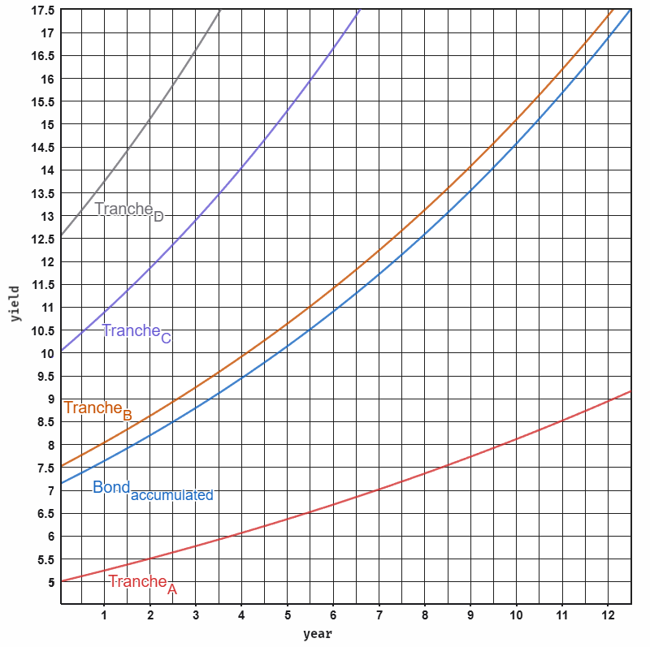
Where:
Assuming low default rates for developed economies and higher for micro-credits. The vault aggregating the weighted contributions across all tranches diversifying risk and accumulating higher yield.
Normalized individual tranche growth functions, assuming unit weight for isolated analysis, are:
These formulas enable precise simulation and plotting, as demonstrated, creating investor projections of long-term value under varying economic scenarios.
This model contrasts stable, low-yield developed markets with high-risk, high-reward emerging markets, utilizing blockchain and AI to bridge the gap in credit reliability.
The framework uses a tiered risk structure to accommodate different investor profiles:
To stabilize emerging market risks, the model adapts "social enforcement" (pioneered by microfinance leaders like Grameen Bank) for the blockchain:
The model moves beyond theory by integrating directly with B2B supply chains to create a closed-loop economy:
Prediction markets offer a high-accuracy, decentralized alternative to traditional forecasting, which often struggles with the volatility of niche industries like Microblocks. By crowdsourcing probabilistic data through traded contracts, these markets provide real-time insights that outpace standard surveys.
Polymarket, a blockchain-based leader in this space, exemplifies this accuracy. Its open-source framework uses smart contracts to ensure transparency and incentive alignment.
The platform’s superiority was notably demonstrated during the 2024 U.S. Presidential Election. While traditional polling suggested a toss-up, Polymarket consistently signaled a Donald Trump victory with probabilities exceeding 60% in the final weeks. Academic studies (e.g. via arXiv and university research) confirmed that its ability to incorporate real-time trader sentiment made it more accurate than pundits or polling aggregates, particularly in swing states.
By leveraging Polymarket’s open-source code, Microblock firms can create custom markets to forecast specific consumer trends, material demands, and design popularity. Key features for this adaptation include:
Combining prediction markets with AI agents amplifies their utility in the Microblock industry. AI agents, autonomous software entities powered by models like large language models, can interface with market data via the Tinyblock Blockchain and deployed prediction market smart contracts.
This integration could automate up to 40-60% of routine decisions in supply chain and product development, based on analogous AI applications in manufacturing.
In an era dominated by attention-extraction airdrop cycles, most blockchain communities follow a predictable path: Explosive growth fueled by farming solving, and long-term human flourishing are the primary values.
To bootstrap and sustain airdrop ownership in a way that survives first contact with economic reality, we expand upon TinyMeritRank: A MeritRank-derived, sybil-resistant reputation and token distribution protocol purpose-built for creative, growth-oriented communities.
TinyMeritRank is a fully decentralized protocol in which every human controls
exactly one soulbound AI agent. Agents monitor on-chain and off-chain activity,
propose contributions, and evaluate them through transparent, stratified sampled
committees using threshold signatures. All reputation vectors and deliberation
rounds are permanently auditable on-chain. The system is deployed on a
Surge-based (Taiko core) Ethereum L2 with ERC-4337 accounts and a private IPFS
cluster.
In short, TinyMeritRank does not merely distribute tokens, it cultivates
builders. It replaces attention farming with advancement farming, engagement
theater with verifiable creative growth, and extractive airdrops with a
self-reinforcing meritocracy of human and artificial minds working in concert.
Reputation flows exclusively along explicit, on-chain directed trust
relationships between soulbound agent wallets (created via signed ERC-4337
user-op).
is the reputation that agent assigns to agent . Personalized PageRank:
keccak256(USERID)).Stage 1: Relevance Filter
Stage 2: Deliberative Scoring
Activity Credit: (Where = number of gossip rounds agent actively broadcast in). Typical range: 1.0 – 3.0. Raw merit points of agent in epoch :
Tokens received by agent :
(DAO may approve concave variant )
ENS has revolutionized decentralized identity. It maps human-readable names to
blockchain addresses, enabling intuitive interactions in web3. However, TradFi
(Traditional Finance) still functions on the legacy IBAN and SWIFT systems. By
bridging nuances, we explicitly split the architecture into vIBAN (Virtual
IBAN) and deIBAN (Decentralized Exchange IBAN) layers.
The vIBAN represents the on-chain, ENS-routable virtual IBAN directly attached
to a domain’s text record. Extending ENS to host vIBANs, verifiable IBAN strings
(e.g. EE471000001020145685) in a viban text record, creates a decentralized
directory. A resolver chain parses the IBAN structure to route queries,
verifying ownership and enabling strictly on-chain execution.
To enable this feature, users require an ENS domain with a viban text record.
This vIBAN is a standard-compliant IBAN, claimed post-KYC via a resolver.
Double Verification ensures validity:
viban.If resolved successfully on-chain, the system executes locally, converting the intent into lightning-fast, native Smart Contract transfers.
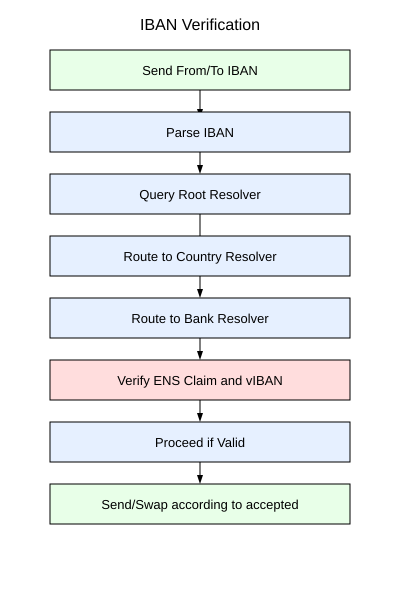
If an IBAN query fails to resolve an equivalent vIBAN on-chain (or returns a
NOROUTE signal), the deIBAN fallback mechanism is engaged. The deIBAN
serves as the decentralized routing layer handling offline or cross-border Forex
conversions and off-ramping.
Transactions use only matching stablecoins on explicitly listed chains (
accepted=eth@taiko,usdc@base,eure@etc). Mismatches route off-chain via
regulated proxies within an Intent-based architecture. For example, the deIBAN
gateway handles localized swaps (USDC to EURe) and notifies users: "Swap
executed with X% slippage at Y rate".
Unresolvable domains default to a burn/destroy address (e.g. a Monerium-like
redemption contract). The wallet sends a signed tx with the toIBAN, enabling
off-chain SEPA clearing through the legacy system. The deIBAN dynamically
abstracts TradFi and DeFi complexities away from the end user.
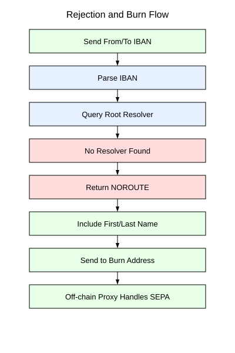
contract CountryResolver {
mapping(bytes2 => address) public bankResolvers;
function resolve(string calldata iban) external view
returns (address wallet, string memory ens) {
(string memory country, string memory bban) = parseIBAN(iban);
if (bankResolvers[country] != address(0)) {
return IBankResolver(bankResolvers[country]).resolve(bban);
}
return (BURN_ADDRESS, "NOROUTE");
}
}
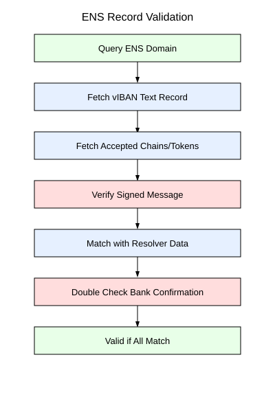
Crypto Native Cash represents a hybrid of digital blockchain value and physical, everyday usability. By combining account abstraction, NFC hardware, flexible spending rules, and physical possessory logic, we create a tool that mirrors the experience of using banknotes while maintaining the sovereignty of a decentralized ledger.
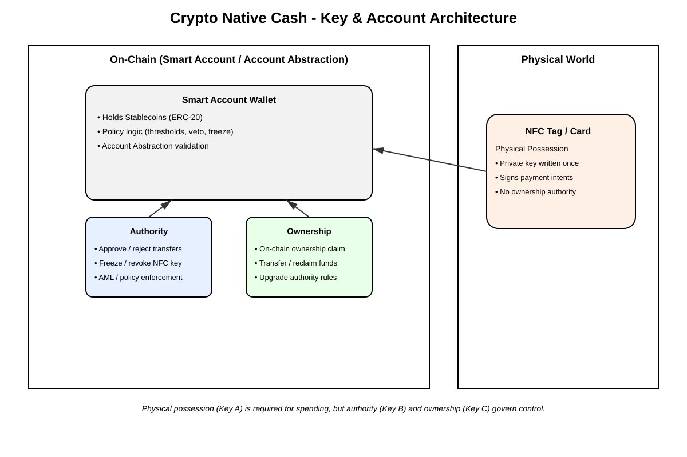
Crypto Native Cash is a physical NFC tag, card or paper money that represents a programmable crypto value instrument tied to an on-chain smart account with on-chain spending rules and governance logic.
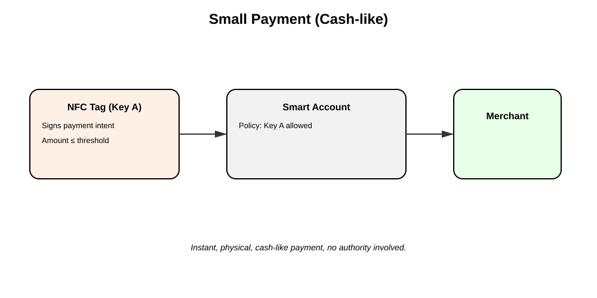
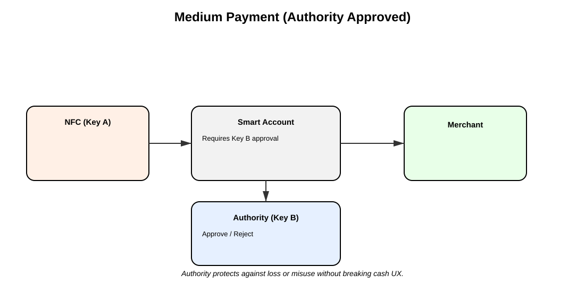
Key C holds ultimate economic control. The NFC tag never "owns" anything. Moving stablecoins to a new smart account requires explicit approval by Key C AND no objection by Key B. Physical loss does not imply economic loss, the on-chain revocation is the real kill switch.
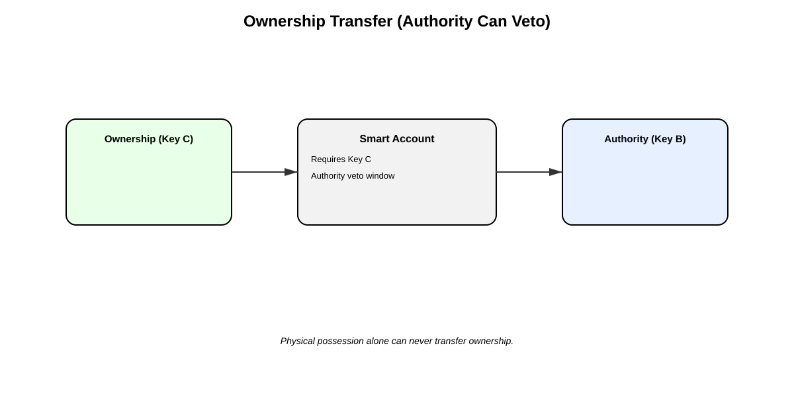
The digitization of physical microblock instructions (Nanoblock, Loz etc.) into 3D formats (LDraw) is currently a labor-intensive and manual process. This paper proposes an automated pipeline utilizing Mobile Vision Transformers (MobileViT) to parse 2D instruction manuals into 3D CAD models.
Microblocks offer a higher resolution than standard bricks due to their smaller
dimensions. They are also more price competitive and have a larger, diverse and
distributed ecosystem, despite lacking a unified digital standard. Current
Optical Character Recognition (OCR) and standard Object Detection models
struggle with the specific hierarchical logic of block instructions:
Step -> Layer -> Brick. We present a solution that treats instruction parsing
as a structured language problem solved through AI/ML and a Rule Engine.
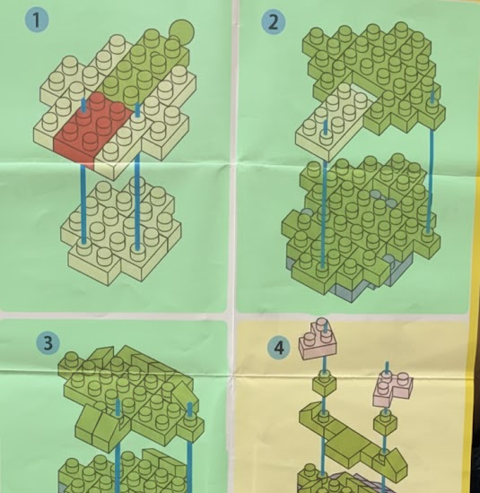
Identifying and segmenting the layer stepsThe architecture uses a coordinate-based approach. It establishes a zero point at the first layer and calculates the relative offset of following layers by identifying visual markers in the instructions (Ground Truth). The DAO-governed ecosystem incentivizes validation, correcting offsets and refining the Rule Engine logic to create a universal standard for digital modeling.
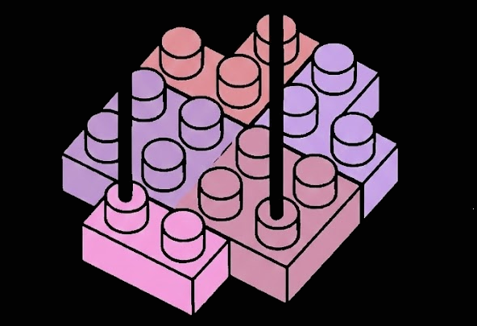
Identifying and processing the first layer of the buildThis architecture is designed for hardware agnosticism:
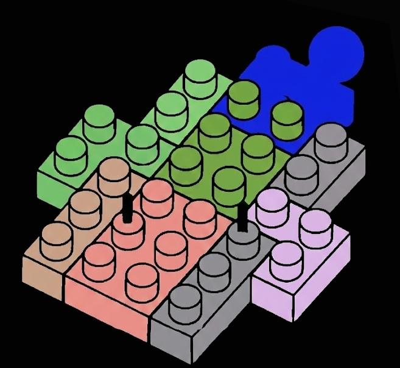
Overlapping incorrect brick identificationWhile the core TinyMeritRank protocol focuses on "Advancement-driven" output, systemic sustainability requires a framework for Sociostasis. Meaning the dynamic maintenance of a community’s social and economic equilibrium. This extension introduces Multi-Dimensional Frequency (), measuring the distinct states of the human and their AI agent.
Frequency is a normal distribution across the network.
We define Systemic Valuation () as the product of utility, merit, frequency, harmony, and the velocity of trust.
Where:
When is high, it acts as a "Harmonic Multiplier", allowing a subculture to increase its frequency without increasing internal stress.
We propose a hybrid governance model for the Tinyblock community, building on the TinyMeritRank protocol. Drawing from transparent government structures in Norway and Estonia, the model combines elected executive elements for agility with merit-weighted voting for fairness.
Vesting spans 8 years with a strong backload to promote long-term decisions and smooth successions.
| Year | Release % (of Total Tokens) | Cumulative % | Rationale |
|---|---|---|---|
| 1 | 0% (Cliff) | 0% | Ensures commitment |
| 2 | 12.5% | 12.5% | Linear distribution starts |
| 3 | 12.5% | 25% | Builds retention |
| 4 | 25% | 50% | Completes first half |
| 5 | 7.5% | 57.5% | Backloaded begins modestly |
| 6 | 10% | 67.5% | Gradual increase |
| 7 | 15% | 82.5% | Asymmetrically rewards late endurance |
| 8 | 17.5% | 100% | Largest payout at end |
Clawbacks apply to the vault for underperformance or malice, proposed by the board or initiated by the community. Slashing extends to governance violations, per TinyMeritRank.